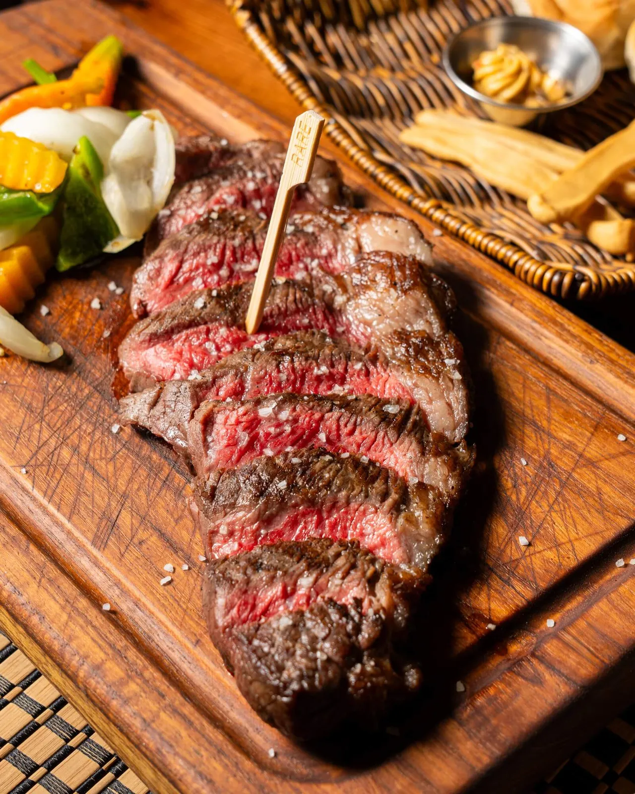

<!doctype html>
<html lang="es">
<head>
<meta charset="utf-8">
<meta name="robots" content="noindex">
<meta name="viewport" content="width=device-width,initial-scale=1">
<title>Fuego Lento · 11 React</title>
<link rel="preconnect" href="https://fonts.googleapis.com">
<link rel="stylesheet" href="https://fonts.googleapis.com/css2?family=Cormorant+Garamond:ital,wght@0,400;0,500;0,600;1,500&family=Manrope:wght@400;500;600;700;800&display=swap">
<style>
/* Contenido y estructura de la propuesta 04 (El Mostrador) con el sistema visual del proyecto: carbón, crema, brasa solo en la acción principal,
   dorado de acento, Cormorant + Manrope, botones en píldora, radios de 3–4 px, sin sombras y comanda de papel crema. */
:root{
  --carbon:#0d0b09;--warm:#13100d;--surface:#191511;--surface-2:#211b16;--surface-hover:#2a231d;--terra:#2a130d;--paper:#eee5d7;--ink:#1b1511;
  --cream:#f4ecdf;--cream-2:#d8cdbd;--muted:#aaa093;
  --ember:#b93a22;--ember-hover:#bf3b23;--ember-active:#a8321c;--fire:#ef6845;--gold:#b98b58;--gold-soft:#e3bd88;--available:#7d9b70;--ok-soft:#a9c79a;
  --ticket:#e9dfce;--ticket-muted:#6b5a47;--ticket-rule:#8a7860;
  --border:rgba(244,236,223,.1);--border-strong:rgba(244,236,223,.18);
  --radius:3px;--radius-lg:4px;--accent:var(--gold);
  --hairline:linear-gradient(90deg,transparent,rgba(185,139,88,.55),transparent);
  --ease-editorial:cubic-bezier(.22,1,.36,1);
  --gutter:16px;--container-max:1280px;--header-height:64px;
}
@media (min-width:480px){:root{--gutter:20px}}
@media (min-width:768px){:root{--gutter:32px}}
@media (min-width:1024px){:root{--header-height:76px}}
@media (min-width:1100px){:root{--gutter:48px}}
*{box-sizing:border-box}
html{scroll-behavior:smooth;scroll-padding-top:calc(var(--header-height) + 16px);color-scheme:dark}
body{margin:0;background:var(--carbon);color:var(--cream);font-family:Manrope,system-ui,sans-serif;font-size:1rem;line-height:1.6;-webkit-font-smoothing:antialiased;text-rendering:optimizeLegibility}
h1,h2,h3{font-family:"Cormorant Garamond",Georgia,serif;font-weight:400;letter-spacing:-.015em;text-wrap:balance;margin:0}
p{margin:0}
img{display:block;max-width:100%}
a{color:inherit}
::selection{background:var(--ember);color:var(--cream)}
:focus-visible{outline:2px solid var(--fire);outline-offset:3px;border-radius:4px}
section[id]{scroll-margin-top:calc(var(--header-height) + 24px)}
.container-x{width:100%;max-width:calc(var(--container-max) + 2*var(--gutter));margin-inline:auto;padding-inline:var(--gutter)}
.section-pad{padding-block:64px}
@media (min-width:768px){.section-pad{padding-block:88px}}
@media (min-width:1024px){.section-pad{padding-block:112px}}
.eyebrow{display:block;font-size:.75rem;line-height:1.4;letter-spacing:.16em;text-transform:uppercase;color:var(--accent);font-weight:600;margin-bottom:12px}
.t-h1{font-size:clamp(2.6rem,9vw,3.5rem);line-height:.96;letter-spacing:-.025em}
.t-h2{font-size:clamp(2.25rem,7vw,3rem);line-height:1;letter-spacing:-.02em}
@media (min-width:640px){.t-h1{font-size:clamp(3.25rem,5.4vw,5.5rem)}.t-h2{font-size:clamp(2.5rem,4vw,4.5rem)}}
.lead{font-size:clamp(1.05rem,1.4vw,1.25rem);line-height:1.6;max-width:62ch;color:var(--cream-2)}
.hairline{height:1px;background:var(--hairline)}

/* Botones: píldoras sin sombra ni escalado */
.btn{display:inline-flex;align-items:center;justify-content:center;gap:8px;min-height:50px;padding:8px 24px;border-radius:999px;border:1px solid transparent;font:600 .75rem Manrope;letter-spacing:.08em;text-transform:uppercase;text-decoration:none;text-align:center;cursor:pointer;user-select:none;transition:background-color .15s,border-color .15s,color .15s;background:none;color:var(--cream)}
.btn-sm{min-height:46px;padding-inline:20px}
.btn-xs{min-height:36px;padding:4px 16px;font-size:.6875rem}
.btn-primary{background:var(--ember);color:var(--cream)}
.btn-primary:hover{background:var(--ember-hover)}.btn-primary:active{background:var(--ember-active)}
.btn-secondary{border-color:rgba(244,236,223,.4)}
.btn-secondary:hover{border-color:rgba(244,236,223,.7);background:rgba(244,236,223,.06)}
.btn-soft{border-color:rgba(185,139,88,.5);color:var(--gold)}
.btn-soft:hover{border-color:var(--gold);background:rgba(185,139,88,.1)}

/* Cabecera */
.hd{position:sticky;top:0;z-index:40;height:var(--header-height);border-bottom:1px solid var(--border);background:rgba(13,11,9,.9);backdrop-filter:blur(12px)}
.hd .container-x{height:100%;display:flex;align-items:center;justify-content:space-between;gap:16px}
.brand{display:flex;align-items:center;gap:10px;min-height:44px;white-space:nowrap;font:600 1.65rem "Cormorant Garamond",serif;letter-spacing:-.01em;text-decoration:none}
@media (min-width:1024px){.brand{font-size:1.9rem}}
.brand img{width:36px;height:36px}
.nav{display:none;align-items:center;gap:24px}
@media (min-width:900px){.nav{display:flex}}
.nav a{position:relative;padding:10px 0;font-size:.8125rem;font-weight:600;color:var(--cream-2);text-decoration:none;transition:color .15s}
.nav a:hover{color:var(--cream)}
.nav a::after{content:"";position:absolute;inset:auto 0 .3rem;height:1px;background:var(--accent);transform:scaleX(0);transform-origin:100% 50%;transition:transform .32s var(--ease-editorial)}
.nav a:hover::after,.nav a:focus-visible::after{transform:scaleX(1);transform-origin:0 50%}

.hero{display:grid;grid-template-columns:1.15fr 1fr;gap:clamp(24px,5vw,72px);align-items:center}
.status{display:inline-flex;align-items:center;gap:8px;margin-bottom:18px;font-size:.8125rem;font-weight:600;letter-spacing:.08em;text-transform:uppercase;color:var(--ok-soft)}
.status i{width:8px;height:8px;border-radius:50%;background:var(--available)}
.hero h1{margin-bottom:18px}
.hero .lead{margin-bottom:28px}
.acts{display:flex;gap:12px;flex-wrap:wrap}
.ph{position:relative;aspect-ratio:4/5;max-height:620px;width:100%;overflow:hidden;border-radius:var(--radius-lg);border:1px solid var(--border)}
.ph img{width:100%;height:100%;object-fit:cover;filter:saturate(.9) contrast(1.06) brightness(.92) sepia(.06)}
.ph::after{content:"";position:absolute;inset:0;pointer-events:none;background:linear-gradient(180deg,transparent 58%,rgba(9,7,5,.5))}

.band{background:var(--surface);border-block:1px solid var(--border)}
.dg{display:grid;grid-template-columns:1.6fr 1fr;gap:clamp(24px,4vw,48px);margin-top:36px;align-items:center}
.dg svg{width:100%;height:auto;display:block}
.body{fill:var(--surface-2);stroke:rgba(244,236,223,.35);stroke-width:2}
.z{fill:var(--carbon);stroke:var(--gold);stroke-width:1.5;cursor:pointer;transition:fill .2s}
.z:hover,.z.on,.z:focus{fill:var(--gold);outline:none}
.zt{font:700 14px Manrope,sans-serif;fill:var(--cream);pointer-events:none}
.z.on+.zt,.z:hover+.zt{fill:var(--ink)}
.note{font-size:.8125rem;color:var(--muted);margin-top:12px}
.tag{position:relative;min-height:116px;padding:22px;background:var(--surface-2);border:1px solid rgba(185,139,88,.5);border-radius:var(--radius-lg);transform-origin:50% -20px}
.tag::before{content:"";position:absolute;left:50%;top:-8px;width:14px;height:14px;border-radius:50%;background:var(--carbon);border:1px solid var(--gold);transform:translateX(-50%)}
.tag h3{font-size:clamp(1.75rem,2.5vw,2.5rem);line-height:1.05;margin-bottom:6px}
.tag p{color:var(--cream-2);font-size:.9375rem;margin-bottom:10px}
.tag .pr{font-weight:700;font-size:1.25rem;font-variant-numeric:tabular-nums}
.tag.sw{animation:sw .7s}
@keyframes sw{25%{transform:rotate(3deg)}55%{transform:rotate(-2deg)}80%{transform:rotate(1deg)}}
.zl{display:flex;flex-wrap:wrap;gap:8px;margin-top:20px;justify-content:center}

.vw{position:relative}
.vp{overflow:hidden;touch-action:pan-y;border-radius:var(--radius-lg);border:1px solid var(--border);background:var(--surface-2)}
.trk{display:flex;transition:transform .8s cubic-bezier(.65,0,.25,1)}
.trk img{flex:0 0 100%;width:100%;aspect-ratio:16/10;object-fit:cover;filter:saturate(.9) contrast(1.06) brightness(.92) sepia(.06)}
.nv{position:absolute;top:50%;transform:translateY(-50%);z-index:2;display:grid;place-items:center;width:46px;height:46px;border-radius:50%;border:1px solid rgba(244,236,223,.4);background:rgba(13,11,9,.7);color:var(--cream);cursor:pointer;transition:background-color .15s,border-color .15s}
.nv:hover{border-color:rgba(244,236,223,.7);background:rgba(13,11,9,.9)}
.nv.l{left:12px}.nv.r{right:12px}

.cols2{display:grid;grid-template-columns:1fr 1fr;gap:clamp(24px,5vw,72px);align-items:center}
.cols2 .t-h2{margin-bottom:20px}
.cols2 p{max-width:42ch;margin-bottom:14px;color:var(--cream-2)}
.cols2 p b{color:var(--cream)}
.cols2 .btn{margin-top:10px}
.ticket{position:relative;width:100%;max-width:440px;margin-inline:auto;background:var(--ticket);color:var(--ink);padding:24px 22px 40px;font-size:.8125rem;font-variant-numeric:tabular-nums;
 -webkit-mask:conic-gradient(from -45deg at bottom,#0000,#000 1deg 89deg,#0000 90deg) bottom/16px 100% repeat-x;mask:conic-gradient(from -45deg at bottom,#0000,#000 1deg 89deg,#0000 90deg) bottom/16px 100% repeat-x}
.ticket h3{font:600 .8125rem Manrope;letter-spacing:.2em;text-transform:uppercase;text-align:center;padding-bottom:12px;margin-bottom:6px;border-bottom:1px dashed var(--ticket-rule)}
.ticket .l{display:grid;grid-template-columns:1.5rem 1fr;gap:8px;padding:11px 0;border-bottom:1px dashed var(--ticket-rule)}
.ticket .l b{font-weight:700;font-size:.9375rem}
.ticket .l span{font-size:.875rem;line-height:1.4}
.ticket .nt{padding-top:12px;font-size:.75rem;line-height:1.45;color:var(--ticket-muted)}

.faq{max-width:900px}
.faq .t-h2{margin-bottom:24px}
details{border-bottom:1px solid var(--border);padding:18px 0}
summary{cursor:pointer;font:600 1rem Manrope;list-style:none;display:flex;justify-content:space-between;gap:16px;align-items:baseline}
summary::-webkit-details-marker{display:none}
summary::after{content:"+";color:var(--gold);font-size:1.4rem;line-height:1}
details[open] summary::after{content:"–"}
details p{margin-top:10px;color:var(--cream-2);max-width:68ch}

.ft{background:var(--warm);border-top:1px solid var(--border);padding:56px 0 40px}
.ft .grid{display:grid;grid-template-columns:2fr 1fr 1fr;gap:40px}
.ft h3{font:600 1.9rem "Cormorant Garamond",serif;letter-spacing:-.01em;margin-bottom:10px}
.ft h4{font:600 .75rem Manrope;letter-spacing:.16em;text-transform:uppercase;color:var(--accent);margin:0 0 8px}
.ft p{color:var(--cream-2)}
.ft a{text-decoration:underline;text-underline-offset:4px;color:var(--cream-2);transition:color .15s}
.ft a:hover{color:var(--cream)}

@media (max-width:900px){.hero,.dg,.cols2,.ft .grid{grid-template-columns:1fr}.hero .ph{max-width:380px;margin-inline:auto}.ft .grid{gap:28px}}
@media (max-width:700px){.hero .ph{display:none}}
@media (prefers-reduced-motion:reduce){html{scroll-behavior:auto}*,*::before,*::after{animation-duration:.001ms!important;animation-iteration-count:1!important;transition-duration:.001ms!important}}
/* ===== Pedido: carta, carnes, ventana de opciones y panel "Mi pedido" (tematizado con variables --o-*) ===== */
.o-ov [hidden],.o-form [hidden]{display:none!important}
.o-chips{display:flex;flex-wrap:wrap;gap:6px 22px;margin:26px 0 22px}
.o-chip{background:none;border:0;border-bottom:2px solid transparent;color:var(--o-muted);font:700 .8125rem var(--o-ui);letter-spacing:.08em;text-transform:uppercase;padding:8px 2px;cursor:pointer;transition:color .15s,border-color .15s}
.o-chip:hover{color:var(--o-fg)}
.o-chip[aria-pressed="true"]{color:var(--o-accent);border-bottom-color:var(--o-accent)}
.o-grid{display:grid;grid-template-columns:repeat(auto-fill,minmax(250px,1fr));gap:16px}
.o-card{display:flex;flex-direction:column;background:var(--o-card);color:var(--o-fg);border:var(--o-bw) solid var(--o-line);border-radius:var(--o-r);overflow:hidden;box-shadow:var(--o-shadow)}
.o-card .im{aspect-ratio:4/3;background:var(--o-card2);overflow:hidden}
.o-card .im img{width:100%;height:100%;object-fit:cover;transition:transform .6s}
.o-card:hover .im img{transform:scale(1.04)}
.o-card .tx{display:flex;flex-direction:column;gap:6px;padding:14px 16px 16px;flex:1}
.o-card h3,.o-combo h3{font-family:var(--o-disp);font-weight:var(--o-dw);text-transform:var(--o-dt);font-size:var(--o-h3);line-height:1.02;letter-spacing:var(--o-dls);margin:0}
.o-card .d{margin:0;color:var(--o-muted);font-size:.875rem;line-height:1.45}
.o-card .ft,.o-combo .ft{display:flex;justify-content:space-between;align-items:center;gap:10px;margin-top:auto;padding-top:10px}
.o-pr{font:700 1rem var(--o-ui);font-variant-numeric:tabular-nums;color:var(--o-fg);white-space:nowrap}
.o-pr small{display:block;font-weight:500;font-size:.75rem;color:var(--o-muted)}
.o-pn{font-size:.75rem;color:var(--o-muted)}
.o-add,.o-prim,.o-ghost{display:inline-flex;align-items:center;justify-content:center;gap:8px;min-height:44px;padding:8px 20px;border-radius:var(--o-btn-r);font:var(--o-btn-font);letter-spacing:var(--o-btn-ls);text-transform:uppercase;cursor:pointer;text-decoration:none;transition:background-color .15s,color .15s,border-color .15s}
.o-add{background:var(--o-add-bg);color:var(--o-add-ink);border:var(--o-bwb) solid var(--o-add-b)}
.o-add:hover{background:var(--o-add-hover)}
.o-add.ok{background:var(--o-ok);border-color:var(--o-ok);color:#fff}
.o-prim{background:var(--o-prim);color:var(--o-prim-ink);border:var(--o-bwb) solid var(--o-prim-b)}
.o-prim:hover{filter:brightness(1.08)}
.o-prim:disabled{opacity:.45;cursor:not-allowed}
.o-ghost{background:none;color:inherit;border:var(--o-bwb) solid currentColor;opacity:.85}
.o-ghost:hover{opacity:1}
.o-link{background:none;border:0;color:inherit;text-decoration:underline;text-underline-offset:4px;font:600 .875rem var(--o-ui);cursor:pointer;padding:10px 4px}
.o-intro{max-width:62ch;color:var(--o-muted);margin:12px 0 0}
.o-note{font-size:.8125rem;color:var(--o-muted);max-width:80ch;margin-top:22px}

/* Carnes */
.o-cat-d{color:var(--o-muted);font-size:.9375rem;margin:0 0 6px}
.o-row{display:grid;grid-template-columns:1fr auto auto;gap:16px;align-items:center;padding:14px 0;border-bottom:var(--o-rowb) solid var(--o-line)}
.o-row b{display:block;font-weight:700}
.o-row small{display:block;color:var(--o-muted);font-size:.8125rem}
.o-combos{display:grid;grid-template-columns:repeat(auto-fill,minmax(260px,1fr));gap:16px}
.o-combo{display:flex;flex-direction:column;gap:6px;background:var(--o-card);color:var(--o-fg);border:var(--o-bw) solid var(--o-line);border-radius:var(--o-r);padding:18px;box-shadow:var(--o-shadow)}
.o-combo .for{font:700 .6875rem var(--o-ui);letter-spacing:.14em;text-transform:uppercase;color:var(--o-accent)}
.o-combo p{margin:0;color:var(--o-muted);font-size:.875rem}
.o-combo ul{margin:4px 0 0;padding-left:18px;font-size:.875rem}
.o-combo .sep{font-size:.8125rem;color:var(--o-muted)}

/* Botón Mi pedido (cabecera) */
.o-mi{display:inline-flex;align-items:center;gap:8px;min-height:36px;padding:3px 14px;border-radius:var(--o-btn-r);background:none;color:inherit;border:var(--o-bwb) solid currentColor;font:var(--o-mi-font);letter-spacing:var(--o-btn-ls);text-transform:uppercase;cursor:pointer;white-space:nowrap}
.o-mi:hover{background:var(--o-mi-hover)}
.o-n{display:inline-grid;place-items:center;min-width:20px;height:20px;padding:0 5px;border-radius:999px;background:var(--o-prim);color:var(--o-prim-ink);font:800 .6875rem var(--o-ui);transition:transform .2s}
.o-n.pop{transform:scale(1.35)}

/* Ventanas */
.o-ov{position:fixed;inset:0;z-index:200;background:rgba(0,0,0,.62);display:flex;animation:o-fade .2s ease both}
.o-ov.dlg{align-items:center;justify-content:center;padding:16px}
.o-ov.drawer{justify-content:flex-end}
@keyframes o-fade{from{opacity:0}}
@keyframes o-slide{from{transform:translateX(100%)}}
@keyframes o-pop{from{opacity:0;transform:translateY(10px) scale(.98)}}
.o-panel{background:var(--o-panel);color:var(--o-panel-fg);display:flex;flex-direction:column;max-height:100%;border:var(--o-bw) solid var(--o-line);font-family:var(--o-ui)}
.o-ov.drawer .o-panel{width:min(460px,100%);height:100%;border-width:0 0 0 var(--o-bw);border-radius:0;animation:o-slide .3s cubic-bezier(.2,.7,.2,1) both}
.o-ov.dlg .o-panel{width:min(520px,100%);border-radius:var(--o-r);animation:o-pop .25s ease both}
.o-ph{display:flex;justify-content:space-between;align-items:center;gap:12px;padding:16px 20px;border-bottom:1px solid var(--o-pline)}
.o-ph h2{font-family:var(--o-disp);font-weight:var(--o-dw);text-transform:var(--o-dt);font-size:1.6rem;margin:0;line-height:1;letter-spacing:var(--o-dls)}
.o-x{width:44px;height:44px;display:grid;place-items:center;background:none;border:0;color:inherit;font-size:1.6rem;cursor:pointer;border-radius:50%}
.o-x:hover{background:var(--o-pline)}
.o-pb{padding:18px 20px;overflow:auto;flex:1}
.o-pf{padding:16px 20px 20px;border-top:1px solid var(--o-pline);display:grid;gap:10px}
.o-fs{border:0;margin:0 0 18px;padding:0}
.o-fs legend{font:700 .75rem var(--o-ui);letter-spacing:.12em;text-transform:uppercase;padding:0;margin-bottom:6px;color:var(--o-panel-muted)}
.o-fs .h{font-size:.8125rem;color:var(--o-panel-muted);margin:0 0 6px}
.o-opt{display:flex;align-items:center;gap:10px;padding:10px 12px;margin-bottom:6px;border:1px solid var(--o-pline);border-radius:var(--o-r);cursor:pointer}
.o-opt:hover{border-color:var(--o-accent2)}
.o-opt input{accent-color:var(--o-accent2);width:18px;height:18px;flex:none}
.o-opt span{flex:1;font-size:.9375rem}
.o-opt small{display:block;color:var(--o-panel-muted);font-size:.75rem}
.o-opt em{font-style:normal;font-weight:700;font-variant-numeric:tabular-nums;font-size:.875rem}
.o-opt:has(input:checked){border-color:var(--o-accent2);background:var(--o-sel)}
.o-err{color:var(--o-err);font-size:.8125rem;margin:4px 0 0}
.o-total{display:flex;justify-content:space-between;font-weight:800;font-size:1.05rem}

/* Comanda (ticket de papel) */
.o-ticket{background:var(--o-paper);color:var(--o-paper-fg);padding:18px 16px 26px;font-size:.8125rem;font-variant-numeric:tabular-nums;
 -webkit-mask:conic-gradient(from -45deg at bottom,#0000,#000 1deg 89deg,#0000 90deg) bottom/14px 100% repeat-x;mask:conic-gradient(from -45deg at bottom,#0000,#000 1deg 89deg,#0000 90deg) bottom/14px 100% repeat-x;padding-bottom:30px}
.o-ticket h3{margin:0;text-align:center;font:600 .8125rem var(--o-ui);letter-spacing:.2em;text-transform:uppercase}
.o-ticket .sub{text-align:center;font:600 .6875rem var(--o-ui);letter-spacing:.2em;text-transform:uppercase;color:var(--o-paper-muted);margin-bottom:6px}
.o-ticket hr{border:0;border-top:1px dashed var(--o-paper-rule);margin:10px 0}
.o-ticket h4{margin:10px 0 0;font:700 .75rem var(--o-ui);letter-spacing:.1em;text-transform:uppercase;color:var(--o-paper-muted)}
.o-ln{display:grid;grid-template-columns:1fr auto;gap:2px 10px;padding:10px 0;border-bottom:1px dotted var(--o-paper-rule)}
.o-ln b{font-weight:700;font-size:.875rem;font-family:var(--o-ui)}
.o-ln .dt{grid-column:1/2;color:var(--o-paper-muted);font-size:.75rem;line-height:1.35}
.o-ln .lt{font-weight:700;text-align:right}
.o-q{grid-column:1/-1;display:flex;align-items:center;gap:6px;margin-top:4px}
.o-q button{width:30px;height:30px;border:1px solid var(--o-paper-rule);background:none;color:inherit;font-size:1rem;cursor:pointer;border-radius:3px}
.o-q button:hover{background:rgba(0,0,0,.08)}
.o-q span{min-width:22px;text-align:center;font-weight:700}
.o-q .rm{margin-left:auto;width:auto;padding:0 8px;font-size:.75rem;text-decoration:underline;border:0}
.o-sums p{display:flex;justify-content:space-between;gap:10px;margin:4px 0;font-weight:700}
.o-sums small{display:block;font-weight:400;color:var(--o-paper-muted)}
.o-form{display:grid;gap:12px;margin-top:18px}
.o-form label{display:grid;gap:4px;font:700 .75rem var(--o-ui);letter-spacing:.08em;text-transform:uppercase;color:var(--o-panel-muted)}
.o-form input,.o-form textarea{font:400 1rem var(--o-ui);padding:11px 12px;background:transparent;color:var(--o-panel-fg);border:1px solid var(--o-pline2);border-radius:var(--o-r);text-transform:none;letter-spacing:0}
.o-form input:focus,.o-form textarea:focus{outline:2px solid var(--o-accent2);outline-offset:1px}
.o-seg{display:grid;grid-template-columns:1fr 1fr;gap:8px;margin-top:18px}
.o-seg label{display:flex;align-items:center;justify-content:center;text-align:center;min-height:46px;padding:6px 10px;border:1px solid var(--o-pline2);border-radius:var(--o-r);font:700 .8125rem var(--o-ui);cursor:pointer}
.o-seg input{position:absolute;opacity:0;pointer-events:none}
.o-seg label:has(input:checked){border-color:var(--o-accent2);background:var(--o-sel)}
.o-seg label:has(input:focus-visible){outline:2px solid var(--o-accent2);outline-offset:2px}
.o-help{font-size:.8125rem;color:var(--o-panel-muted);margin:0;line-height:1.4}
.o-empty{text-align:center;padding:40px 10px;display:grid;gap:14px;justify-items:center}
.o-empty h3{font-family:var(--o-disp);font-weight:var(--o-dw);text-transform:var(--o-dt);font-size:1.8rem;margin:0}
.o-toast{position:fixed;left:50%;bottom:20px;z-index:300;transform:translate(-50%,30px);opacity:0;background:var(--o-toast-bg);color:var(--o-toast-fg);padding:11px 18px;border-radius:var(--o-btn-r);font:600 .875rem var(--o-ui);pointer-events:none;transition:.25s;max-width:calc(100% - 32px)}
.o-toast.on{opacity:1;transform:translate(-50%,0)}
.o-add:focus-visible,.o-prim:focus-visible,.o-ghost:focus-visible,.o-mi:focus-visible,.o-chip:focus-visible,.o-x:focus-visible,.o-link:focus-visible,.o-q button:focus-visible{outline:2px solid var(--o-focus);outline-offset:2px}
@media (max-width:640px){.o-row{grid-template-columns:1fr auto}.o-row .o-add{grid-column:1/-1;justify-self:start}.o-grid{grid-template-columns:1fr}.o-ov.dlg{align-items:flex-end;padding:0}.o-ov.dlg .o-panel{width:100%;border-radius:var(--o-r) var(--o-r) 0 0;max-height:92%}}
@media (prefers-reduced-motion:reduce){.o-ov,.o-panel{animation:none!important}.o-card .im img{transition:none}}

:root{--o-ui:Manrope,system-ui,sans-serif;--o-disp:"Cormorant Garamond",Georgia,serif;--o-dw:500;--o-dt:none;--o-dls:-.015em;--o-h3:1.6rem;
--o-fg:#f4ecdf;--o-muted:#aaa093;--o-card:#191511;--o-card2:#211b16;--o-line:rgba(244,236,223,.1);--o-bw:1px;--o-r:4px;--o-shadow:none;--o-rowb:1px;
--o-accent:#b98b58;--o-accent2:#b98b58;--o-sel:rgba(185,139,88,.1);--o-btn-r:999px;--o-btn-font:600 .75rem Manrope,system-ui,sans-serif;--o-mi-font:600 .75rem Manrope,system-ui,sans-serif;--o-btn-ls:.08em;--o-bwb:1px;
--o-add-bg:transparent;--o-add-ink:#b98b58;--o-add-b:rgba(185,139,88,.5);--o-add-hover:rgba(185,139,88,.1);--o-ok:#4f7a42;--o-prim:#b93a22;--o-prim-ink:#f4ecdf;--o-prim-b:transparent;
--o-panel:#13100d;--o-panel-fg:#f4ecdf;--o-panel-muted:#aaa093;--o-pline:rgba(244,236,223,.1);--o-pline2:rgba(244,236,223,.25);
--o-paper:#e9dfce;--o-paper-fg:#1b1511;--o-paper-muted:#6b5a47;--o-paper-rule:#8a7860;--o-toast-bg:#211b16;--o-toast-fg:#f4ecdf;--o-focus:#ef6845;--o-err:#f0867b;--o-mi-hover:rgba(244,236,223,.06)}
.o-mi{border-color:rgba(244,236,223,.4);margin-left:auto;margin-right:4px}
.o-add{padding:6px 18px}
.o-ph h2{font-size:1.9rem}
.o-ticket h3{font-family:Manrope}
.o-card h3{font-weight:500}
.o-cat-d{margin-top:0}
</style>
</head>
<body>
<div id="root"></div>

<script>window.FL_DATA={"cats":[{"id":"entrantes","n":"Entrantes"},{"id":"pastas","n":"Pastas"},{"id":"principales","n":"Principales"},{"id":"sartenes","n":"Sartenes"},{"id":"carnes-parrilla","n":"Carnes Parrilla"},{"id":"postre","n":"Postre"}],"menu":[{"i":"aguachile-de-mariscos","n":"Aguachile de Mariscos","d":"Preparación fresca de mariscos marinados, ideal para comenzar la experiencia.","p":6100,"c":"entrantes","im":"aguachile-de-mariscos","pn":"","og":[]},{"i":"tartaleta-de-tartar","n":"Tartaleta de Tartar","d":"Solomillo angus macerado con tomate deshidratado, especias, alcaparras, extra virgen, yema curada y mayonesa trufada.","p":6100,"c":"entrantes","im":"tartaleta-de-tartar","pn":"","og":[]},{"i":"carpaccio-de-res-artesanal","n":"Carpaccio de Res Artesanal","d":"Láminas de angus, pepino escabechado, olivos negros, tomate deshidratado, sal de apio y aire de limón.","p":7500,"c":"entrantes","im":"carpaccio-de-res-artesanal","pn":"","og":[]},{"i":"ramen-steak","n":"Ramen Steak","d":"Fondo de res, gyozas de carne, huevo duro, hongos, vegetales y solomillo angus.","p":5400,"c":"entrantes","im":"ramen-steak","pn":"","og":[]},{"i":"ensalada-smoke","n":"Ensalada Smoke","d":"Selección de vegetales, maíz dulce, champiñones, cebolla curtida, solomillo angus y mayonesa ahumada de cilantro.","p":5300,"c":"entrantes","im":"ensalada-smoke","pn":"","og":[]},{"i":"charcuteria-a-la-lena","n":"Charcutería a la Leña","d":"Chorizo argentino, chorizo parrillero, morcilla, salchicha parrillera y salsa bbq, acompañado con pan.","p":10500,"c":"entrantes","im":"charcuteria-a-la-lena","pn":"","og":[]},{"i":"croquetas-de-la-casa","n":"Croquetas de la Casa","d":"Bechamel enriquecida con hebras de res y espinacas salteadas.","p":2000,"c":"entrantes","im":"croquetas-de-la-casa","pn":"","og":[]},{"i":"pulpo-a-las-brasas-y-romesco","n":"Pulpo a las Brasas y Romesco","d":"Pulpo cocinado a las brasas acompañado de salsa romesco tradicional.","p":5700,"c":"entrantes","im":"pulpo-a-las-brasas-y-romesco","pn":"","og":[]},{"i":"tabla-fuego-lento","n":"Tabla Fuego Lento","d":"Selección de cortes angus, costilla de cerdo, chorizo argentino, morcilla y pan.","p":24100,"c":"entrantes","im":"tabla-fuego-lento","pn":"","og":[]},{"i":"provolone-ahumado-a-la-plancha","n":"Provolone Ahumado a la Plancha","d":"Medallón de provolone a la plancha acompañado de tostadas de baguette.","p":5600,"c":"entrantes","im":"provolone-ahumado-a-la-plancha","pn":"","og":[]},{"i":"tabla-de-jamones-y-queso","n":"Tabla de Jamones y Queso","d":"Selección de jamones ibéricos, quesos de la casa y tomaca.","p":9800,"c":"entrantes","im":"tabla-de-jamones-y-queso","pn":"","og":[]},{"i":"tabla-de-quesos","n":"Tabla de Quesos","d":"Mixtos de quesos condimentados y extra virgen de oliva.","p":5800,"c":"entrantes","im":"tabla-de-quesos","pn":"","og":[]},{"i":"tataki-de-res","n":"Tataki de Res","d":"Corte tataki de angus, col kimchi, jengibre confitado, wasabi y ponzu del chef.","p":9300,"c":"entrantes","im":"tataki-de-res","pn":"","og":[]},{"i":"jamon-iberico","n":"Jamón Ibérico","d":"Jamón ibérico seleccionado, ideal para abrir el apetito o compartir al centro.","p":9500,"c":"entrantes","im":"","pn":"","og":[]},{"i":"empanada-angus-trufada","n":"Empanada Angus Trufada","d":"Empanada crujiente rellena de carne angus con toque aromático trufado.","p":5500,"c":"entrantes","im":"empanada-angus-trufada","pn":"","og":[]},{"i":"ceviche-escarlata","n":"Ceviche Escarlata","d":"Entrada marina marinada, fresca y llena de sabor equilibrado.","p":4600,"c":"entrantes","im":"ceviche-escarlata","pn":"","og":[]},{"i":"raviolis-de-res-y-pomodoro-asada","n":"Raviolis de Res y Pomodoro Asada","d":"Pasta rellena de angus, aceitunas negras, cebolla y apio, acompañado de salsa roja de la casa, pesto y queso cabra curada.","p":5800,"c":"pastas","im":"raviolis-de-res-y-pomodoro-asada","pn":"","og":[]},{"i":"pasta-con-res-y-hongos","n":"Pasta con Res y Hongos","d":"Pasta larga salteada con solomillo angus, tomate deshidratado, ajo, hongos, extra virgen de oliva y queso cabra curada.","p":9200,"c":"pastas","im":"pasta-con-res-y-hongos","pn":"","og":[]},{"i":"raggu-y-pasta-corta","n":"Raggú y Pasta Corta","d":"Salsa raggú tradicional y queso parmesano.","p":4200,"c":"pastas","im":"","pn":"","og":[]},{"i":"tagliatelle-y-costillas-guisadas","n":"Tagliatelle y Costillas Guisadas","d":"Pasta tagliatelle servida con sabrosas costillas guisadas en su jugo.","p":15900,"c":"pastas","im":"tagliatelle-y-costillas-guisadas","pn":"","og":[]},{"i":"cesta-de-pan","n":"Cesta de pan","d":"","p":3600,"c":"principales","im":"","pn":"","og":[{"id":"guarniciones","n":"Guarniciones","k":"extra","r":false,"mx":5,"h":"","o":[["pasta-de-ajo-y-mantequilla","Pasta de ajo y mantequilla",1100,0],["arroz-montero","Arroz Montero",2000,0],["pure-del-dia","Puré del día",990,0],["vegetales-grillados-y-salsa-de-yogurt","Vegetales grillados y salsa de yogurt",990,0],["papas-fritas-gratinadas","Papas fritas gratinadas",1700,0]]}]},{"i":"confitado-de-res","n":"Confitado de Res","d":"Dados de angus a baja temperatura, plátano maduro frito y mojo cimarrón.","p":15800,"c":"principales","im":"confitado-de-res","pn":"","og":[{"id":"guarniciones","n":"Guarniciones","k":"extra","r":false,"mx":5,"h":"","o":[["pasta-de-ajo-y-mantequilla","Pasta de ajo y mantequilla",1100,0],["arroz-montero","Arroz Montero",2000,0],["pure-del-dia","Puré del día",990,0],["vegetales-grillados-y-salsa-de-yogurt","Vegetales grillados y salsa de yogurt",990,0],["papas-fritas-gratinadas","Papas fritas gratinadas",1700,0]]}]},{"i":"costilla-de-cerdo-asadas-y-salsa-cajun","n":"Costilla de Cerdo Asadas y Salsa Cajún","d":"Costilla de cerdo al carbón y salsa especiada.","p":11800,"c":"principales","im":"costilla-de-cerdo-asadas-y-salsa-cajun","pn":"","og":[{"id":"guarniciones","n":"Guarniciones","k":"extra","r":false,"mx":5,"h":"","o":[["pasta-de-ajo-y-mantequilla","Pasta de ajo y mantequilla",1100,0],["arroz-montero","Arroz Montero",2000,0],["pure-del-dia","Puré del día",990,0],["vegetales-grillados-y-salsa-de-yogurt","Vegetales grillados y salsa de yogurt",990,0],["papas-fritas-gratinadas","Papas fritas gratinadas",1700,0]]}]},{"i":"cordero-fuego-lento","n":"Cordero Fuego Lento","d":"Cordero confitado con olivas, maíz dulce y tomillo.","p":9500,"c":"principales","im":"cordero-fuego-lento","pn":"","og":[{"id":"guarniciones","n":"Guarniciones","k":"extra","r":false,"mx":5,"h":"","o":[["pasta-de-ajo-y-mantequilla","Pasta de ajo y mantequilla",1100,0],["arroz-montero","Arroz Montero",2000,0],["pure-del-dia","Puré del día",990,0],["vegetales-grillados-y-salsa-de-yogurt","Vegetales grillados y salsa de yogurt",990,0],["papas-fritas-gratinadas","Papas fritas gratinadas",1700,0]]}]},{"i":"langosta-torno-bacon","n":"Langosta Torno Bacon","d":"Rolos de langosta albardados con bacon y salsa mediterránea blanca.","p":8200,"c":"principales","im":"langosta-torno-bacon","pn":"","og":[{"id":"guarniciones","n":"Guarniciones","k":"extra","r":false,"mx":5,"h":"","o":[["pasta-de-ajo-y-mantequilla","Pasta de ajo y mantequilla",1100,0],["arroz-montero","Arroz Montero",2000,0],["pure-del-dia","Puré del día",990,0],["vegetales-grillados-y-salsa-de-yogurt","Vegetales grillados y salsa de yogurt",990,0],["papas-fritas-gratinadas","Papas fritas gratinadas",1700,0]]}]},{"i":"filete-blanco-grille-y-crema-de-elotes","n":"Filete Blanco Grille y Crema de Elotes","d":"Filete de pescado blanco a la grilla acompañado de cremosa salsa de elote.","p":6200,"c":"principales","im":"","pn":"","og":[{"id":"guarniciones","n":"Guarniciones","k":"extra","r":false,"mx":5,"h":"","o":[["pasta-de-ajo-y-mantequilla","Pasta de ajo y mantequilla",1100,0],["arroz-montero","Arroz Montero",2000,0],["pure-del-dia","Puré del día",990,0],["vegetales-grillados-y-salsa-de-yogurt","Vegetales grillados y salsa de yogurt",990,0],["papas-fritas-gratinadas","Papas fritas gratinadas",1700,0]]}]},{"i":"filetillo-de-res","n":"Filetillo de Res","d":"Fajas de solomillo salteadas con boniato frito y salsa.","p":11500,"c":"principales","im":"filetillo-de-res","pn":"","og":[{"id":"guarniciones","n":"Guarniciones","k":"extra","r":false,"mx":5,"h":"","o":[["pasta-de-ajo-y-mantequilla","Pasta de ajo y mantequilla",1100,0],["arroz-montero","Arroz Montero",2000,0],["pure-del-dia","Puré del día",990,0],["vegetales-grillados-y-salsa-de-yogurt","Vegetales grillados y salsa de yogurt",990,0],["papas-fritas-gratinadas","Papas fritas gratinadas",1700,0]]}]},{"i":"ocaso-thai-pollo-al-curry-del-chef","n":"Ocaso Thai (Pollo al Curry del Chef)","d":"Especialidad de la casa elaborada con tiernos trozos de pollo en salsa curry.","p":5100,"c":"principales","im":"ocaso-thai-pollo-al-curry-del-chef","pn":"","og":[{"id":"guarniciones","n":"Guarniciones","k":"extra","r":false,"mx":5,"h":"","o":[["pasta-de-ajo-y-mantequilla","Pasta de ajo y mantequilla",1100,0],["arroz-montero","Arroz Montero",2000,0],["pure-del-dia","Puré del día",990,0],["vegetales-grillados-y-salsa-de-yogurt","Vegetales grillados y salsa de yogurt",990,0],["papas-fritas-gratinadas","Papas fritas gratinadas",1700,0]]}]},{"i":"florentina-de-la-casa","n":"Florentina de la Casa","d":"Tournedo de pollo relleno de espinaca y queso cheddar.","p":6900,"c":"principales","im":"","pn":"","og":[{"id":"guarniciones","n":"Guarniciones","k":"extra","r":false,"mx":5,"h":"","o":[["pasta-de-ajo-y-mantequilla","Pasta de ajo y mantequilla",1100,0],["arroz-montero","Arroz Montero",2000,0],["pure-del-dia","Puré del día",990,0],["vegetales-grillados-y-salsa-de-yogurt","Vegetales grillados y salsa de yogurt",990,0],["papas-fritas-gratinadas","Papas fritas gratinadas",1700,0]]}]},{"i":"montura-de-cerdo","n":"Montura de Cerdo","d":"Cortes de lomo de cerdo a la brasa con salsa trufada.","p":5900,"c":"principales","im":"","pn":"","og":[{"id":"guarniciones","n":"Guarniciones","k":"extra","r":false,"mx":5,"h":"","o":[["pasta-de-ajo-y-mantequilla","Pasta de ajo y mantequilla",1100,0],["arroz-montero","Arroz Montero",2000,0],["pure-del-dia","Puré del día",990,0],["vegetales-grillados-y-salsa-de-yogurt","Vegetales grillados y salsa de yogurt",990,0],["papas-fritas-gratinadas","Papas fritas gratinadas",1700,0]]}]},{"i":"gambones","n":"Gambones","d":"Gambones salteados con salsa Fuego Lento y un lecho de tomates asados.","p":14200,"c":"principales","im":"gambones","pn":"","og":[{"id":"guarniciones","n":"Guarniciones","k":"extra","r":false,"mx":5,"h":"","o":[["pasta-de-ajo-y-mantequilla","Pasta de ajo y mantequilla",1100,0],["arroz-montero","Arroz Montero",2000,0],["pure-del-dia","Puré del día",990,0],["vegetales-grillados-y-salsa-de-yogurt","Vegetales grillados y salsa de yogurt",990,0],["papas-fritas-gratinadas","Papas fritas gratinadas",1700,0]]}]},{"i":"marea-roja","n":"Marea Roja","d":"Churrasco Angus Prime y gambones flameados.","p":26800,"c":"principales","im":"marea-roja","pn":"","og":[{"id":"guarniciones","n":"Guarniciones","k":"extra","r":false,"mx":5,"h":"","o":[["pasta-de-ajo-y-mantequilla","Pasta de ajo y mantequilla",1100,0],["arroz-montero","Arroz Montero",2000,0],["pure-del-dia","Puré del día",990,0],["vegetales-grillados-y-salsa-de-yogurt","Vegetales grillados y salsa de yogurt",990,0],["papas-fritas-gratinadas","Papas fritas gratinadas",1700,0]]}]},{"i":"hamburguesa-fuego-lento-230-grs","n":"Hamburguesa Fuego Lento (230 g)","d":"Molida de angus, piña asada, pepinillos, cebolla curtida, bacon, queso de cabra ahumado, pan de hamburguesas y papas fritas.","p":11800,"c":"principales","im":"hamburguesa-fuego-lento-230-grs","pn":"","og":[{"id":"guarniciones","n":"Guarniciones","k":"extra","r":false,"mx":5,"h":"","o":[["pasta-de-ajo-y-mantequilla","Pasta de ajo y mantequilla",1100,0],["arroz-montero","Arroz Montero",2000,0],["pure-del-dia","Puré del día",990,0],["vegetales-grillados-y-salsa-de-yogurt","Vegetales grillados y salsa de yogurt",990,0],["papas-fritas-gratinadas","Papas fritas gratinadas",1700,0]]}]},{"i":"hogaza-para-mar","n":"Hogaza para Mar","d":"Pan hogaza rústica relleno de gambones salteados al ajo y perejil, con crema blanca y emmental.","p":20200,"c":"principales","im":"","pn":"","og":[{"id":"guarniciones","n":"Guarniciones","k":"extra","r":false,"mx":5,"h":"","o":[["pasta-de-ajo-y-mantequilla","Pasta de ajo y mantequilla",1100,0],["arroz-montero","Arroz Montero",2000,0],["pure-del-dia","Puré del día",990,0],["vegetales-grillados-y-salsa-de-yogurt","Vegetales grillados y salsa de yogurt",990,0],["papas-fritas-gratinadas","Papas fritas gratinadas",1700,0]]}]},{"i":"pesca-a-la-brasa","n":"Pesca a la brasa","d":"pesca entera al carbón y mantequilla saborizada","p":6900,"c":"principales","im":"","pn":"","og":[{"id":"guarniciones","n":"Guarniciones","k":"extra","r":false,"mx":5,"h":"","o":[["pasta-de-ajo-y-mantequilla","Pasta de ajo y mantequilla",1100,0],["arroz-montero","Arroz Montero",2000,0],["pure-del-dia","Puré del día",990,0],["vegetales-grillados-y-salsa-de-yogurt","Vegetales grillados y salsa de yogurt",990,0],["papas-fritas-gratinadas","Papas fritas gratinadas",1700,0]]}]},{"i":"risotto-de-res-y-berenjena-escabechada","n":"Risotto de Res y Berenjena Escabechada","d":"Arroz cremoso tipo risotto preparado en sartén con hebras de res y berenjena escabechada.","p":9100,"c":"sartenes","im":"risotto-de-res-y-berenjena-escabechada","pn":"","og":[{"id":"guarniciones","n":"Guarniciones","k":"extra","r":false,"mx":5,"h":"","o":[["pasta-de-ajo-y-mantequilla","Pasta de ajo y mantequilla",1100,0],["arroz-montero","Arroz Montero",2000,0],["pure-del-dia","Puré del día",990,0],["vegetales-grillados-y-salsa-de-yogurt","Vegetales grillados y salsa de yogurt",990,0],["papas-fritas-gratinadas","Papas fritas gratinadas",1700,0]]}]},{"i":"arroz-meloso-de-mariscos-y-curry-verde","n":"Arroz Meloso de Mariscos y Curry Verde","d":"Arroz de textura melosa cocinado en sartén con mariscos variados y curry verde.","p":7800,"c":"sartenes","im":"","pn":"","og":[{"id":"guarniciones","n":"Guarniciones","k":"extra","r":false,"mx":5,"h":"","o":[["pasta-de-ajo-y-mantequilla","Pasta de ajo y mantequilla",1100,0],["arroz-montero","Arroz Montero",2000,0],["pure-del-dia","Puré del día",990,0],["vegetales-grillados-y-salsa-de-yogurt","Vegetales grillados y salsa de yogurt",990,0],["papas-fritas-gratinadas","Papas fritas gratinadas",1700,0]]}]},{"i":"brocheta-de-res","n":"Brocheta de Res","d":"Brocheta de carne de res a la parrilla, sabrosa y jugosa.","p":14200,"c":"carnes-parrilla","im":"brocheta-de-res","pn":"","og":[{"id":"termino-de-coccion","n":"Término de cocción","k":"cooking","r":true,"mx":1,"h":"Guía orientativa: poco hecho (centro rojo y jugoso), medio (centro rosado), tres cuartos (apenas rosado), bien hecho (sin rosado).","o":[["poco-hecho","Poco hecho",0,0],["medio","Medio",0,0],["tres-cuartos","Tres cuartos",0,0],["bien-hecho","Bien hecho",0,0]]},{"id":"salsas-a-elegir","n":"Salsas a Elegir","k":"sauce","r":true,"mx":1,"h":"","o":[["chimichurri","Chimichurri",0,1],["barbecue-de-la-casa","Barbecue de la Casa",0,1],["salsa-fuego-lento","Salsa Fuego Lento",0,1],["refrito-de-ajo-y-tomate-deshidratado","Refrito de Ajo y Tomate Deshidratado",0,1],["pico-de-gallo","Pico de Gallo",0,1]]},{"id":"guarniciones","n":"Guarniciones","k":"extra","r":false,"mx":5,"h":"","o":[["pasta-de-ajo-y-mantequilla","Pasta de ajo y mantequilla",1100,0],["arroz-montero","Arroz Montero",2000,0],["pure-del-dia","Puré del día",990,0],["vegetales-grillados-y-salsa-de-yogurt","Vegetales grillados y salsa de yogurt",990,0],["papas-fritas-gratinadas","Papas fritas gratinadas",1700,0]]}]},{"i":"filetillo-angus-con-esencia-de-ajo-y-miel-250-grs","n":"Filetillo Angus con Esencia de Ajo y Miel (250 g)","d":"Corte de filetillo angus preparado a la parrilla con sutil toque de ajo y miel.","p":16400,"c":"carnes-parrilla","im":"filetillo-angus-con-esencia-de-ajo-y-miel-250-grs","pn":"","og":[{"id":"termino-de-coccion","n":"Término de cocción","k":"cooking","r":true,"mx":1,"h":"Guía orientativa: poco hecho (centro rojo y jugoso), medio (centro rosado), tres cuartos (apenas rosado), bien hecho (sin rosado).","o":[["poco-hecho","Poco hecho",0,0],["medio","Medio",0,0],["tres-cuartos","Tres cuartos",0,0],["bien-hecho","Bien hecho",0,0]]},{"id":"salsas-a-elegir","n":"Salsas a Elegir","k":"sauce","r":true,"mx":1,"h":"","o":[["chimichurri","Chimichurri",0,1],["barbecue-de-la-casa","Barbecue de la Casa",0,1],["salsa-fuego-lento","Salsa Fuego Lento",0,1],["refrito-de-ajo-y-tomate-deshidratado","Refrito de Ajo y Tomate Deshidratado",0,1],["pico-de-gallo","Pico de Gallo",0,1]]},{"id":"guarniciones","n":"Guarniciones","k":"extra","r":false,"mx":5,"h":"","o":[["pasta-de-ajo-y-mantequilla","Pasta de ajo y mantequilla",1100,0],["arroz-montero","Arroz Montero",2000,0],["pure-del-dia","Puré del día",990,0],["vegetales-grillados-y-salsa-de-yogurt","Vegetales grillados y salsa de yogurt",990,0],["papas-fritas-gratinadas","Papas fritas gratinadas",1700,0]]}]},{"i":"ribeye-angus-prime-350-grs","n":"Ribeye Angus Prime (350 g)","d":"Corte ribeye angus prime asado a la parrilla en porción individual.","p":26850,"c":"carnes-parrilla","im":"","pn":"","og":[{"id":"termino-de-coccion","n":"Término de cocción","k":"cooking","r":true,"mx":1,"h":"Guía orientativa: poco hecho (centro rojo y jugoso), medio (centro rosado), tres cuartos (apenas rosado), bien hecho (sin rosado).","o":[["poco-hecho","Poco hecho",0,0],["medio","Medio",0,0],["tres-cuartos","Tres cuartos",0,0],["bien-hecho","Bien hecho",0,0]]},{"id":"salsas-a-elegir","n":"Salsas a Elegir","k":"sauce","r":true,"mx":1,"h":"","o":[["chimichurri","Chimichurri",0,1],["barbecue-de-la-casa","Barbecue de la Casa",0,1],["salsa-fuego-lento","Salsa Fuego Lento",0,1],["refrito-de-ajo-y-tomate-deshidratado","Refrito de Ajo y Tomate Deshidratado",0,1],["pico-de-gallo","Pico de Gallo",0,1]]},{"id":"guarniciones","n":"Guarniciones","k":"extra","r":false,"mx":5,"h":"","o":[["pasta-de-ajo-y-mantequilla","Pasta de ajo y mantequilla",1100,0],["arroz-montero","Arroz Montero",2000,0],["pure-del-dia","Puré del día",990,0],["vegetales-grillados-y-salsa-de-yogurt","Vegetales grillados y salsa de yogurt",990,0],["papas-fritas-gratinadas","Papas fritas gratinadas",1700,0]]}]},{"i":"ribeye-angus-prime-700-grs","n":"Ribeye Angus Prime (700 g)","d":"Corte ribeye angus prime asado a la parrilla en formato grande para compartir.","p":51500,"c":"carnes-parrilla","im":"","pn":"","og":[{"id":"termino-de-coccion","n":"Término de cocción","k":"cooking","r":true,"mx":1,"h":"Guía orientativa: poco hecho (centro rojo y jugoso), medio (centro rosado), tres cuartos (apenas rosado), bien hecho (sin rosado).","o":[["poco-hecho","Poco hecho",0,0],["medio","Medio",0,0],["tres-cuartos","Tres cuartos",0,0],["bien-hecho","Bien hecho",0,0]]},{"id":"salsas-a-elegir","n":"Salsas a Elegir","k":"sauce","r":true,"mx":1,"h":"","o":[["chimichurri","Chimichurri",0,1],["barbecue-de-la-casa","Barbecue de la Casa",0,1],["salsa-fuego-lento","Salsa Fuego Lento",0,1],["refrito-de-ajo-y-tomate-deshidratado","Refrito de Ajo y Tomate Deshidratado",0,1],["pico-de-gallo","Pico de Gallo",0,1]]},{"id":"guarniciones","n":"Guarniciones","k":"extra","r":false,"mx":5,"h":"","o":[["pasta-de-ajo-y-mantequilla","Pasta de ajo y mantequilla",1100,0],["arroz-montero","Arroz Montero",2000,0],["pure-del-dia","Puré del día",990,0],["vegetales-grillados-y-salsa-de-yogurt","Vegetales grillados y salsa de yogurt",990,0],["papas-fritas-gratinadas","Papas fritas gratinadas",1700,0]]}]},{"i":"picana-angus-prime-230-grs","n":"Picaña Angus Prime (230 g)","d":"Corte de picaña angus prime asado a la parrilla en porción de 230 gramos.","p":15950,"c":"carnes-parrilla","im":"picana-angus-prime-230-grs","pn":"","og":[{"id":"termino-de-coccion","n":"Término de cocción","k":"cooking","r":true,"mx":1,"h":"Guía orientativa: poco hecho (centro rojo y jugoso), medio (centro rosado), tres cuartos (apenas rosado), bien hecho (sin rosado).","o":[["poco-hecho","Poco hecho",0,0],["medio","Medio",0,0],["tres-cuartos","Tres cuartos",0,0],["bien-hecho","Bien hecho",0,0]]},{"id":"salsas-a-elegir","n":"Salsas a Elegir","k":"sauce","r":true,"mx":1,"h":"","o":[["chimichurri","Chimichurri",0,1],["barbecue-de-la-casa","Barbecue de la Casa",0,1],["salsa-fuego-lento","Salsa Fuego Lento",0,1],["refrito-de-ajo-y-tomate-deshidratado","Refrito de Ajo y Tomate Deshidratado",0,1],["pico-de-gallo","Pico de Gallo",0,1]]},{"id":"guarniciones","n":"Guarniciones","k":"extra","r":false,"mx":5,"h":"","o":[["pasta-de-ajo-y-mantequilla","Pasta de ajo y mantequilla",1100,0],["arroz-montero","Arroz Montero",2000,0],["pure-del-dia","Puré del día",990,0],["vegetales-grillados-y-salsa-de-yogurt","Vegetales grillados y salsa de yogurt",990,0],["papas-fritas-gratinadas","Papas fritas gratinadas",1700,0]]}]},{"i":"picana-angus-prime-460-grs","n":"Picaña Angus Prime (460 g)","d":"Corte de picaña angus prime asado a la parrilla en porción de 460 gramos.","p":27600,"c":"carnes-parrilla","im":"picana-angus-prime-460-grs","pn":"","og":[{"id":"termino-de-coccion","n":"Término de cocción","k":"cooking","r":true,"mx":1,"h":"Guía orientativa: poco hecho (centro rojo y jugoso), medio (centro rosado), tres cuartos (apenas rosado), bien hecho (sin rosado).","o":[["poco-hecho","Poco hecho",0,0],["medio","Medio",0,0],["tres-cuartos","Tres cuartos",0,0],["bien-hecho","Bien hecho",0,0]]},{"id":"salsas-a-elegir","n":"Salsas a Elegir","k":"sauce","r":true,"mx":1,"h":"","o":[["chimichurri","Chimichurri",0,1],["barbecue-de-la-casa","Barbecue de la Casa",0,1],["salsa-fuego-lento","Salsa Fuego Lento",0,1],["refrito-de-ajo-y-tomate-deshidratado","Refrito de Ajo y Tomate Deshidratado",0,1],["pico-de-gallo","Pico de Gallo",0,1]]},{"id":"guarniciones","n":"Guarniciones","k":"extra","r":false,"mx":5,"h":"","o":[["pasta-de-ajo-y-mantequilla","Pasta de ajo y mantequilla",1100,0],["arroz-montero","Arroz Montero",2000,0],["pure-del-dia","Puré del día",990,0],["vegetales-grillados-y-salsa-de-yogurt","Vegetales grillados y salsa de yogurt",990,0],["papas-fritas-gratinadas","Papas fritas gratinadas",1700,0]]}]},{"i":"picana-angus-prime-300-grs","n":"Picaña Angus Prime (300 g)","d":"Corte de picaña angus prime asado a la parrilla en porción de 300 gramos.","p":19800,"c":"carnes-parrilla","im":"picana-angus-prime-300-grs","pn":"","og":[{"id":"termino-de-coccion","n":"Término de cocción","k":"cooking","r":true,"mx":1,"h":"Guía orientativa: poco hecho (centro rojo y jugoso), medio (centro rosado), tres cuartos (apenas rosado), bien hecho (sin rosado).","o":[["poco-hecho","Poco hecho",0,0],["medio","Medio",0,0],["tres-cuartos","Tres cuartos",0,0],["bien-hecho","Bien hecho",0,0]]},{"id":"salsas-a-elegir","n":"Salsas a Elegir","k":"sauce","r":true,"mx":1,"h":"","o":[["chimichurri","Chimichurri",0,1],["barbecue-de-la-casa","Barbecue de la Casa",0,1],["salsa-fuego-lento","Salsa Fuego Lento",0,1],["refrito-de-ajo-y-tomate-deshidratado","Refrito de Ajo y Tomate Deshidratado",0,1],["pico-de-gallo","Pico de Gallo",0,1]]},{"id":"guarniciones","n":"Guarniciones","k":"extra","r":false,"mx":5,"h":"","o":[["pasta-de-ajo-y-mantequilla","Pasta de ajo y mantequilla",1100,0],["arroz-montero","Arroz Montero",2000,0],["pure-del-dia","Puré del día",990,0],["vegetales-grillados-y-salsa-de-yogurt","Vegetales grillados y salsa de yogurt",990,0],["papas-fritas-gratinadas","Papas fritas gratinadas",1700,0]]}]},{"i":"picana-angus-prime-600-grs","n":"Picaña Angus Prime (600 g)","d":"Corte de picaña angus prime asado a la parrilla en porción de 600 gramos.","p":37500,"c":"carnes-parrilla","im":"picana-angus-prime-600-grs","pn":"","og":[{"id":"termino-de-coccion","n":"Término de cocción","k":"cooking","r":true,"mx":1,"h":"Guía orientativa: poco hecho (centro rojo y jugoso), medio (centro rosado), tres cuartos (apenas rosado), bien hecho (sin rosado).","o":[["poco-hecho","Poco hecho",0,0],["medio","Medio",0,0],["tres-cuartos","Tres cuartos",0,0],["bien-hecho","Bien hecho",0,0]]},{"id":"salsas-a-elegir","n":"Salsas a Elegir","k":"sauce","r":true,"mx":1,"h":"","o":[["chimichurri","Chimichurri",0,1],["barbecue-de-la-casa","Barbecue de la Casa",0,1],["salsa-fuego-lento","Salsa Fuego Lento",0,1],["refrito-de-ajo-y-tomate-deshidratado","Refrito de Ajo y Tomate Deshidratado",0,1],["pico-de-gallo","Pico de Gallo",0,1]]},{"id":"guarniciones","n":"Guarniciones","k":"extra","r":false,"mx":5,"h":"","o":[["pasta-de-ajo-y-mantequilla","Pasta de ajo y mantequilla",1100,0],["arroz-montero","Arroz Montero",2000,0],["pure-del-dia","Puré del día",990,0],["vegetales-grillados-y-salsa-de-yogurt","Vegetales grillados y salsa de yogurt",990,0],["papas-fritas-gratinadas","Papas fritas gratinadas",1700,0]]}]},{"i":"churrasco-angus-prime-230-grs","n":"Churrasco Angus Prime (230 g)","d":"Churrasco de res angus prime a la parrilla en porción de 230 gramos.","p":20350,"c":"carnes-parrilla","im":"churrasco-angus-prime-230-grs","pn":"","og":[{"id":"termino-de-coccion","n":"Término de cocción","k":"cooking","r":true,"mx":1,"h":"Guía orientativa: poco hecho (centro rojo y jugoso), medio (centro rosado), tres cuartos (apenas rosado), bien hecho (sin rosado).","o":[["poco-hecho","Poco hecho",0,0],["medio","Medio",0,0],["tres-cuartos","Tres cuartos",0,0],["bien-hecho","Bien hecho",0,0]]},{"id":"salsas-a-elegir","n":"Salsas a Elegir","k":"sauce","r":true,"mx":1,"h":"","o":[["chimichurri","Chimichurri",0,1],["barbecue-de-la-casa","Barbecue de la Casa",0,1],["salsa-fuego-lento","Salsa Fuego Lento",0,1],["refrito-de-ajo-y-tomate-deshidratado","Refrito de Ajo y Tomate Deshidratado",0,1],["pico-de-gallo","Pico de Gallo",0,1]]},{"id":"guarniciones","n":"Guarniciones","k":"extra","r":false,"mx":5,"h":"","o":[["pasta-de-ajo-y-mantequilla","Pasta de ajo y mantequilla",1100,0],["arroz-montero","Arroz Montero",2000,0],["pure-del-dia","Puré del día",990,0],["vegetales-grillados-y-salsa-de-yogurt","Vegetales grillados y salsa de yogurt",990,0],["papas-fritas-gratinadas","Papas fritas gratinadas",1700,0]]}]},{"i":"churrasco-angus-prime-460-grs","n":"Churrasco Angus Prime (460 g)","d":"Churrasco de res angus prime a la parrilla en porción de 460 gramos.","p":34800,"c":"carnes-parrilla","im":"churrasco-angus-prime-460-grs","pn":"","og":[{"id":"termino-de-coccion","n":"Término de cocción","k":"cooking","r":true,"mx":1,"h":"Guía orientativa: poco hecho (centro rojo y jugoso), medio (centro rosado), tres cuartos (apenas rosado), bien hecho (sin rosado).","o":[["poco-hecho","Poco hecho",0,0],["medio","Medio",0,0],["tres-cuartos","Tres cuartos",0,0],["bien-hecho","Bien hecho",0,0]]},{"id":"salsas-a-elegir","n":"Salsas a Elegir","k":"sauce","r":true,"mx":1,"h":"","o":[["chimichurri","Chimichurri",0,1],["barbecue-de-la-casa","Barbecue de la Casa",0,1],["salsa-fuego-lento","Salsa Fuego Lento",0,1],["refrito-de-ajo-y-tomate-deshidratado","Refrito de Ajo y Tomate Deshidratado",0,1],["pico-de-gallo","Pico de Gallo",0,1]]},{"id":"guarniciones","n":"Guarniciones","k":"extra","r":false,"mx":5,"h":"","o":[["pasta-de-ajo-y-mantequilla","Pasta de ajo y mantequilla",1100,0],["arroz-montero","Arroz Montero",2000,0],["pure-del-dia","Puré del día",990,0],["vegetales-grillados-y-salsa-de-yogurt","Vegetales grillados y salsa de yogurt",990,0],["papas-fritas-gratinadas","Papas fritas gratinadas",1700,0]]}]},{"i":"new-york-steak-angus-prime-350-grs","n":"New York Steak Angus Prime (350 g)","d":"Corte clásico new york steak de res angus prime asado a la parrilla.","p":24900,"c":"carnes-parrilla","im":"new-york-steak-angus-prime-350-grs","pn":"","og":[{"id":"termino-de-coccion","n":"Término de cocción","k":"cooking","r":true,"mx":1,"h":"Guía orientativa: poco hecho (centro rojo y jugoso), medio (centro rosado), tres cuartos (apenas rosado), bien hecho (sin rosado).","o":[["poco-hecho","Poco hecho",0,0],["medio","Medio",0,0],["tres-cuartos","Tres cuartos",0,0],["bien-hecho","Bien hecho",0,0]]},{"id":"salsas-a-elegir","n":"Salsas a Elegir","k":"sauce","r":true,"mx":1,"h":"","o":[["chimichurri","Chimichurri",0,1],["barbecue-de-la-casa","Barbecue de la Casa",0,1],["salsa-fuego-lento","Salsa Fuego Lento",0,1],["refrito-de-ajo-y-tomate-deshidratado","Refrito de Ajo y Tomate Deshidratado",0,1],["pico-de-gallo","Pico de Gallo",0,1]]},{"id":"guarniciones","n":"Guarniciones","k":"extra","r":false,"mx":5,"h":"","o":[["pasta-de-ajo-y-mantequilla","Pasta de ajo y mantequilla",1100,0],["arroz-montero","Arroz Montero",2000,0],["pure-del-dia","Puré del día",990,0],["vegetales-grillados-y-salsa-de-yogurt","Vegetales grillados y salsa de yogurt",990,0],["papas-fritas-gratinadas","Papas fritas gratinadas",1700,0]]}]},{"i":"costilla-de-res-angus-prime-500-grs","n":"Costilla de Res Angus Prime (500 g)","d":"Costilla de res angus prime asada a fuego de parrilla.","p":22650,"c":"carnes-parrilla","im":"","pn":"","og":[{"id":"termino-de-coccion","n":"Término de cocción","k":"cooking","r":true,"mx":1,"h":"Guía orientativa: poco hecho (centro rojo y jugoso), medio (centro rosado), tres cuartos (apenas rosado), bien hecho (sin rosado).","o":[["poco-hecho","Poco hecho",0,0],["medio","Medio",0,0],["tres-cuartos","Tres cuartos",0,0],["bien-hecho","Bien hecho",0,0]]},{"id":"salsas-a-elegir","n":"Salsas a Elegir","k":"sauce","r":true,"mx":1,"h":"","o":[["chimichurri","Chimichurri",0,1],["barbecue-de-la-casa","Barbecue de la Casa",0,1],["salsa-fuego-lento","Salsa Fuego Lento",0,1],["refrito-de-ajo-y-tomate-deshidratado","Refrito de Ajo y Tomate Deshidratado",0,1],["pico-de-gallo","Pico de Gallo",0,1]]},{"id":"guarniciones","n":"Guarniciones","k":"extra","r":false,"mx":5,"h":"","o":[["pasta-de-ajo-y-mantequilla","Pasta de ajo y mantequilla",1100,0],["arroz-montero","Arroz Montero",2000,0],["pure-del-dia","Puré del día",990,0],["vegetales-grillados-y-salsa-de-yogurt","Vegetales grillados y salsa de yogurt",990,0],["papas-fritas-gratinadas","Papas fritas gratinadas",1700,0]]}]},{"i":"t-bone-angus-prime-400-grs","n":"T-Bone Angus Prime (400 g)","d":"Corte t-bone de res angus prime asado a la parrilla.","p":29400,"c":"carnes-parrilla","im":"t-bone-angus-prime-400-grs","pn":"","og":[{"id":"termino-de-coccion","n":"Término de cocción","k":"cooking","r":true,"mx":1,"h":"Guía orientativa: poco hecho (centro rojo y jugoso), medio (centro rosado), tres cuartos (apenas rosado), bien hecho (sin rosado).","o":[["poco-hecho","Poco hecho",0,0],["medio","Medio",0,0],["tres-cuartos","Tres cuartos",0,0],["bien-hecho","Bien hecho",0,0]]},{"id":"salsas-a-elegir","n":"Salsas a Elegir","k":"sauce","r":true,"mx":1,"h":"","o":[["chimichurri","Chimichurri",0,1],["barbecue-de-la-casa","Barbecue de la Casa",0,1],["salsa-fuego-lento","Salsa Fuego Lento",0,1],["refrito-de-ajo-y-tomate-deshidratado","Refrito de Ajo y Tomate Deshidratado",0,1],["pico-de-gallo","Pico de Gallo",0,1]]},{"id":"guarniciones","n":"Guarniciones","k":"extra","r":false,"mx":5,"h":"","o":[["pasta-de-ajo-y-mantequilla","Pasta de ajo y mantequilla",1100,0],["arroz-montero","Arroz Montero",2000,0],["pure-del-dia","Puré del día",990,0],["vegetales-grillados-y-salsa-de-yogurt","Vegetales grillados y salsa de yogurt",990,0],["papas-fritas-gratinadas","Papas fritas gratinadas",1700,0]]}]},{"i":"tomahawk-angus-choice","n":"Tomahawk Angus Choice","d":"Corte tomahawk angus choice cobrado por peso (precio por kg).","p":56000,"c":"carnes-parrilla","im":"","pn":"por kg · se cobra según el peso real","og":[{"id":"termino-de-coccion","n":"Término de cocción","k":"cooking","r":true,"mx":1,"h":"Guía orientativa: poco hecho (centro rojo y jugoso), medio (centro rosado), tres cuartos (apenas rosado), bien hecho (sin rosado).","o":[["poco-hecho","Poco hecho",0,0],["medio","Medio",0,0],["tres-cuartos","Tres cuartos",0,0],["bien-hecho","Bien hecho",0,0]]},{"id":"salsas-a-elegir","n":"Salsas a Elegir","k":"sauce","r":true,"mx":1,"h":"","o":[["chimichurri","Chimichurri",0,1],["barbecue-de-la-casa","Barbecue de la Casa",0,1],["salsa-fuego-lento","Salsa Fuego Lento",0,1],["refrito-de-ajo-y-tomate-deshidratado","Refrito de Ajo y Tomate Deshidratado",0,1],["pico-de-gallo","Pico de Gallo",0,1]]},{"id":"guarniciones","n":"Guarniciones","k":"extra","r":false,"mx":5,"h":"","o":[["pasta-de-ajo-y-mantequilla","Pasta de ajo y mantequilla",1100,0],["arroz-montero","Arroz Montero",2000,0],["pure-del-dia","Puré del día",990,0],["vegetales-grillados-y-salsa-de-yogurt","Vegetales grillados y salsa de yogurt",990,0],["papas-fritas-gratinadas","Papas fritas gratinadas",1700,0]]}]},{"i":"tomahawk-angus-prime","n":"Tomahawk Angus Prime","d":"Corte tomahawk angus prime de calidad superior cobrado por peso (precio por kg).","p":65900,"c":"carnes-parrilla","im":"","pn":"por kg · se cobra según el peso real","og":[{"id":"termino-de-coccion","n":"Término de cocción","k":"cooking","r":true,"mx":1,"h":"Guía orientativa: poco hecho (centro rojo y jugoso), medio (centro rosado), tres cuartos (apenas rosado), bien hecho (sin rosado).","o":[["poco-hecho","Poco hecho",0,0],["medio","Medio",0,0],["tres-cuartos","Tres cuartos",0,0],["bien-hecho","Bien hecho",0,0]]},{"id":"salsas-a-elegir","n":"Salsas a Elegir","k":"sauce","r":true,"mx":1,"h":"","o":[["chimichurri","Chimichurri",0,1],["barbecue-de-la-casa","Barbecue de la Casa",0,1],["salsa-fuego-lento","Salsa Fuego Lento",0,1],["refrito-de-ajo-y-tomate-deshidratado","Refrito de Ajo y Tomate Deshidratado",0,1],["pico-de-gallo","Pico de Gallo",0,1]]},{"id":"guarniciones","n":"Guarniciones","k":"extra","r":false,"mx":5,"h":"","o":[["pasta-de-ajo-y-mantequilla","Pasta de ajo y mantequilla",1100,0],["arroz-montero","Arroz Montero",2000,0],["pure-del-dia","Puré del día",990,0],["vegetales-grillados-y-salsa-de-yogurt","Vegetales grillados y salsa de yogurt",990,0],["papas-fritas-gratinadas","Papas fritas gratinadas",1700,0]]}]},{"i":"cream-brulee-y-frutos-confitados","n":"Cream Brûlée y Frutos Confitados","d":"Clásico postre de crema horneada con costra crujiente de caramelo y frutos confitados.","p":1600,"c":"postre","im":"cream-brulee-y-frutos-confitados","pn":"","og":[]},{"i":"locura-mi-amor","n":"Locura Mi Amor","d":"Flanquesillo, quenelle de vainilla, jalea de frutas y caramelo salado.","p":2500,"c":"postre","im":"locura-mi-amor","pn":"","og":[]},{"i":"oasis","n":"Oasis","d":"Biscocho de vainilla, boleado de coco, salsa de mango y tajín.","p":2000,"c":"postre","im":"oasis","pn":"","og":[]},{"i":"tarta-de-queso","n":"Tarta de Queso","d":"Postre cremoso de queso horneado al estilo tradicional.","p":2200,"c":"postre","im":"tarta-de-queso","pn":"","og":[]},{"i":"tarta-de-la-casa","n":"Tarta de la Casa","d":"Especialidad dulcera elaborada según la receta artesanal de la casa.","p":3000,"c":"postre","im":"tarta-de-la-casa","pn":"","og":[]}],"mc":[{"id":"steaks","n":"Steaks en porción","d":"Porciones individuales de 8 a 12 oz.","f":"Precio por pieza"},{"id":"cortes","n":"Cortes de la casa","d":"Ribeye, lip-on, vacío y lomo de tira, porcionados en Fuego Lento.","f":"Porciones de peso fijo y piezas por kg"},{"id":"embutidos","n":"Embutidos para la parrilla","d":"Morcilla, longaniza y cuerda de chorizo.","f":"Precio por paquete"},{"id":"combos","n":"Combos","d":"Parrilladas para 2 y para 4 personas, con su contenido detallado.","f":"Precio por combo"}],"meat":[{"i":"ribeye-boneless-choice","n":"Ribeye boneless CHOICE","d":"Ribeye deshuesado CHOICE, porción individual.","p":14.93,"c":"steaks","sz":"12 oz (≈ 340 g)","pn":"","af":"","og":[],"inc":null,"reg":null,"serves":null},{"i":"chuleton-deshuesado-choice","n":"Chuletón deshuesado CHOICE","d":"Chuletón deshuesado CHOICE, porción individual.","p":12.37,"c":"steaks","sz":"10 oz (≈ 283 g)","pn":"","af":"","og":[],"inc":null,"reg":null,"serves":null},{"i":"filete-ribeye-roll","n":"Filete Ribeye Roll","d":"Filete de ribeye roll, porción individual.","p":9,"c":"steaks","sz":"10 oz (≈ 283 g)","pn":"","af":"","og":[],"inc":null,"reg":null,"serves":null},{"i":"filete-de-lomo","n":"Filete de lomo","d":"Filete de lomo, porción individual.","p":5.96,"c":"steaks","sz":"8 oz (≈ 227 g)","pn":"","af":"","og":[],"inc":null,"reg":null,"serves":null},{"i":"t-bone-choice","n":"T-bone CHOICE","d":"T-bone CHOICE, porción individual.","p":18.64,"c":"steaks","sz":"12 oz (≈ 340 g)","pn":"","af":"21/10","og":[],"inc":null,"reg":null,"serves":null},{"i":"solomillo-top-2-3","n":"Solomillo top 2/3","d":"Solomillo top 2/3, porción individual.","p":10.13,"c":"steaks","sz":"8 oz (≈ 227 g)","pn":"","af":"21/10","og":[],"inc":null,"reg":null,"serves":null},{"i":"ribeye-export","n":"Ribeye EXPORT","d":"Ribeye EXPORT porcionado en Fuego Lento, de 1 a 2 kg.","p":48.55,"c":"cortes","sz":"porción de 1 a 2 kg","pn":"por kg · se cobra según el peso real","af":"","og":[{"id":"peso","n":"Peso aproximado","k":"weight","r":true,"mx":1,"h":"Se cobra según el peso real de la pieza; el importe del pedido es una estimación.","o":[["1-kg","1 kg",0,0],["1.5-kg","1.5 kg",24.28,0],["2-kg","2 kg",48.55,0]]}],"inc":null,"reg":null,"serves":null},{"i":"ribeye-lip-on-choice","n":"Ribeye lip-on CHOICE","d":"Ribeye lip-on CHOICE, porción de 300 g.","p":15.39,"c":"cortes","sz":"porción 300 g","pn":"","af":"","og":[],"inc":null,"reg":null,"serves":null},{"i":"chuleton-lip-on-choice","n":"Chuletón lip-on CHOICE","d":"Chuletón lip-on CHOICE, porción de 300 g.","p":14.33,"c":"cortes","sz":"porción 300 g","pn":"","af":"","og":[],"inc":null,"reg":null,"serves":null},{"i":"churrasco-de-vacio-angus","n":"Churrasco de vacío Angus","d":"Churrasco de vacío Angus, porción de 300 g.","p":12.47,"c":"cortes","sz":"porción 300 g","pn":"","af":"","og":[],"inc":null,"reg":null,"serves":null},{"i":"lomo-de-tira-certified-angus","n":"Lomo de tira Certified Angus","d":"Lomo de tira Certified Angus, porción de 300 g.","p":12.18,"c":"cortes","sz":"porción 300 g","pn":"","af":"","og":[],"inc":null,"reg":null,"serves":null},{"i":"tapa-de-solomillo-certified-angus","n":"Tapa de solomillo Certified Angus","d":"Tapa de solomillo Certified Angus, pieza completa de unos 1.2 kg.","p":27.67,"c":"cortes","sz":"pieza completa","pn":"por kg · se cobra según el peso real","af":"","og":[{"id":"peso","n":"Peso aproximado","k":"weight","r":true,"mx":1,"h":"Se cobra según el peso real de la pieza; el importe del pedido es una estimación.","o":[["1.2-kg","Pieza completa (~1.2 kg)",5.53,0]]}],"inc":null,"reg":null,"serves":null},{"i":"morcilla","n":"Morcilla","d":"Morcilla para la parrilla, paquete de 2.5 lb.","p":19.8,"c":"embutidos","sz":"paquete 2.5 lb (≈ 1.13 kg)","pn":"","af":"","og":[],"inc":null,"reg":null,"serves":null},{"i":"longaniza-chorizo-argentino","n":"Longaniza chorizo argentino","d":"Longaniza de chorizo argentino, paquete de 2.5 lb.","p":19.56,"c":"embutidos","sz":"paquete 2.5 lb (≈ 1.13 kg)","pn":"","af":"","og":[],"inc":null,"reg":null,"serves":null},{"i":"cuerda-parrillera-de-chorizo","n":"Cuerda parrillera de chorizo","d":"Cuerda parrillera de chorizo, paquete de 2 lb.","p":15.83,"c":"embutidos","sz":"paquete 2 lb (≈ 907 g)","pn":"","af":"","og":[],"inc":null,"reg":null,"serves":null},{"i":"noche-de-ribeye","n":"Noche de Ribeye","d":"La cena clásica de steakhouse","p":27.99,"c":"combos","sz":"","pn":"","af":"","og":[],"inc":["2 ribeye boneless CHOICE de 12 oz"],"reg":29.87,"serves":2},{"i":"parrilla-criolla-para-dos","n":"Parrilla Criolla para Dos","d":"Sabor de parrillada en casa","p":38.99,"c":"combos","sz":"","pn":"","af":"","og":[],"inc":["2 churrascos de vacío de 300 g","1 cuerda parrillera de chorizo (2 lb)"],"reg":40.77,"serves":2},{"i":"dos-cortes-dos-gustos","n":"Dos Cortes, Dos Gustos","d":"Para quien quiere probar de todo","p":44.99,"c":"combos","sz":"","pn":"","af":"","og":[],"inc":["1 ribeye lip-on de 300 g","1 lomo de tira Angus de 300 g","1 paquete de longaniza argentina"],"reg":47.13,"serves":2},{"i":"experiencia-fuego-lento","n":"Experiencia Fuego Lento","d":"Un gran corte para compartir","p":64.99,"c":"combos","sz":"","pn":"pieza de peso variable · el peso indicado es aproximado","af":"","og":[],"inc":["1 ribeye EXPORT de 1 kg","1 paquete de morcilla"],"reg":68.34,"serves":2},{"i":"seleccion-premium","n":"Selección Premium","d":"Lo mejor del CHOICE","p":68.99,"c":"combos","sz":"","pn":"","af":"","og":[],"inc":["2 ribeye lip-on de 300 g","2 chuletones lip-on de 300 g","1 cuerda parrillera de chorizo"],"reg":75.26,"serves":4},{"i":"steak-night","n":"Steak Night","d":"Dos steaks por persona","p":69.99,"c":"combos","sz":"","pn":"","af":"","og":[],"inc":["4 filetes ribeye roll de 10 oz","4 filetes de lomo de 8 oz","1 cuerda parrillera de chorizo"],"reg":75.67,"serves":4},{"i":"parrillada-familiar","n":"Parrillada Familiar","d":"La parrillada completa","p":81.99,"c":"combos","sz":"","pn":"","af":"","og":[],"inc":["4 churrascos de vacío de 300 g","1 paquete de longaniza argentina","1 paquete de morcilla"],"reg":89.24,"serves":4},{"i":"gran-parrillada-fuego-lento","n":"Gran Parrillada Fuego Lento","d":"Para celebrar en grande","p":111.99,"c":"combos","sz":"","pn":"pieza de peso variable · el peso indicado es aproximado","af":"","og":[],"inc":["1 tapa de solomillo entera (~1.2 kg)","2 lomos de tira Angus de 300 g","2 chuletones de 10 oz","Longaniza y morcilla"],"reg":121.67,"serves":4}]};</script>
<script src="https://cdnjs.cloudflare.com/ajax/libs/react/18.3.1/umd/react.production.min.js"></script>
<script src="https://cdnjs.cloudflare.com/ajax/libs/react-dom/18.3.1/umd/react-dom.production.min.js"></script>
<script src="https://cdnjs.cloudflare.com/ajax/libs/babel-standalone/7.24.7/babel.min.js"></script>
<script type="text/babel">
const { useState, useEffect, useLayoutEffect, useRef } = React;

const WA = "https://wa.me/5358465895?text=Hola%2C%20quiero%20hacer%20un%20pedido";
const prefersReduced = () => window.matchMedia("(prefers-reduced-motion: reduce)").matches;

/* ───────── Datos ───────── */
const ZONES = [
  { d: "M170 55 L330 55 L330 130 L170 130 Z", label: "Ribeye", x: 225, y: 98, name: "Ribeye lip-on CHOICE", text: "Porción de 300 g, con el borde de grasa.", price: "15,39 USD" },
  { d: "M335 55 L470 55 Q535 60 540 110 L335 130 Z", label: "Lomo", x: 400, y: 98, name: "Filete de lomo", text: "Porción individual de 8 oz.", price: "5,96 USD" },
  { d: "M170 135 L335 135 L335 200 L190 203 Z", label: "Lomo de tira", x: 205, y: 172, name: "Lomo de tira Certified Angus", text: "Porción de 300 g.", price: "12,18 USD" },
  { d: "M340 138 L538 118 L540 170 Q535 198 510 198 L340 200 Z", label: "Vacío", x: 400, y: 172, name: "Churrasco de vacío Angus", text: "Porción de 300 g.", price: "12,47 USD" },
];

const PLATOS = [
  { img: "empanada-angus-trufada", name: "Empanada Angus Trufada", price: "5 500 CUP" },
  { img: "ceviche-escarlata", name: "Ceviche Escarlata", price: "4 600 CUP" },
  { img: "tataki-de-res", name: "Tataki de Res", price: "9 300 CUP" },
  { img: "gambones", name: "Gambones", price: "14 200 CUP" },
  { img: "cordero-fuego-lento", name: "Cordero Fuego Lento", price: "9 500 CUP" },
  { img: "hamburguesa-fuego-lento-230-grs", name: "Hamburguesa Fuego Lento", price: "11 800 CUP" },
  { img: "churrasco-angus-prime-230-grs", name: "Churrasco Angus Prime", price: "20 350 CUP" },
  { img: "charcuteria-a-la-lena", name: "Charcutería a la Leña", price: "10 500 CUP" },
  { img: "tabla-fuego-lento", name: "Tabla Fuego Lento", price: "24 100 CUP" },
];

const FAQ = [
  ["¿Qué diferencia hay entre platos preparados y carnes para cocinar?", "Los platos preparados son los de la carta y van en CUP. Las carnes para cocinar son crudas, van en USD y se preparan en casa."],
  ["¿Cómo se confirma mi pedido?", "La web prepara un resumen y abre WhatsApp para que lo envíes. El equipo confirma disponibilidad, entrega y pago por ese chat."],
  ["¿Puedo pedir platos y carnes en el mismo pedido?", "Sí. Verás un subtotal para cada tipo, en su propia moneda."],
  ["¿Cómo se cobran las piezas por peso?", "Según el peso real de la pieza; el importe del pedido es una estimación hasta pesarla."],
  ["¿Cómo se paga?", "El método de pago se coordina por WhatsApp al confirmar tu pedido."],
];


/* ───────── Pedido: datos y utilidades ───────── */
const D = window.FL_DATA, RATE = 450, PHONE = "5358465895", KEY = "fl-pedido-v1", NAME = "Fuego Lento Steakhouse";
const ALL = [...D.menu.map((p) => ({ ...p, line: "carta", cur: "CUP" })), ...D.meat.map((p) => ({ ...p, line: "carnes", cur: "USD" }))];
const grp = (n) => String(Math.round(n)).replace(/\B(?=(\d{3})+(?!\d))/g, " ");
const cup = (n) => grp(n) + " CUP";
const usd = (n) => n.toFixed(2).replace(".", ",") + " USD";
const money = (p, v) => (p.cur === "USD" ? usd(v) : cup(v));
const Price = ({ p }) => (
  <span className="o-pr">{money(p, p.p)}{p.cur === "USD" && <small>≈ {cup(p.p * RATE)}</small>}</span>
);
const imgOf = (name) => "img/" + name + ".webp";

function loadOrder() {
  try { const s = JSON.parse(localStorage.getItem(KEY) || "null"); if (s && s.cart) return s; } catch (e) {}
  return { cart: [], method: "pickup", cust: { name: "", address: "", notes: "" } };
}

function totalsOf(cart) {
  const t = { cup: 0, usd: 0, weighted: false };
  cart.forEach((l) => { if (l.cur === "USD") t.usd += l.unit * l.qty; else t.cup += l.unit * l.qty; if (l.weighted) t.weighted = true; });
  return t;
}

function buildMessage(order) {
  const { cart, method, cust } = order, o = [];
  o.push("*NUEVO PEDIDO — " + NAME.toUpperCase() + "*", "", "*Cliente*", "Nombre: " + cust.name.trim(), "", "*Entrega*", method === "delivery" ? "Entrega a domicilio" : "Recoger en el local");
  if (method === "delivery" && cust.address.trim()) o.push("Dirección: " + cust.address.trim());
  const blocks = [["Platos preparados", cart.filter((l) => l.line === "carta")], ["Carnes para cocinar", cart.filter((l) => l.line === "carnes")]].filter((b) => b[1].length);
  let n = 0;
  o.push("", "*Pedido*");
  blocks.forEach(([title, lines]) => {
    if (blocks.length > 1) o.push("", "_" + title + "_");
    lines.forEach((l) => {
      o.push("", ++n + ". " + l.qty + " × " + l.name);
      l.details.forEach((d) => o.push("   - " + d));
      const tot = l.unit * l.qty;
      o.push("   - Subtotal: " + (l.cur === "USD" ? usd(tot) + " (≈ " + cup(tot * RATE) + ")" : cup(tot)) + (l.weighted ? " (estimado, según peso real)" : ""));
    });
  });
  const t = totalsOf(cart);
  o.push("", "*Resumen*");
  if (t.cup) o.push("Platos preparados: " + cup(t.cup));
  if (t.usd) o.push("Carnes para cocinar: " + usd(t.usd) + " (≈ " + cup(t.usd * RATE) + ", aproximado)");
  if (t.weighted) o.push("Las piezas por kg se cobran según su peso real.");
  o.push(method === "delivery" ? "Envío: se confirma por WhatsApp" : "Recogida en el local: sin costo", "Pago: se coordina por WhatsApp");
  if (cust.notes.trim()) o.push("", "*Observaciones generales*", cust.notes.trim());
  o.push("", "Pedido enviado desde la web de " + NAME + ".", "Quedo a la espera de confirmación.");
  return o.join("\n");
}

/* ───────── Contexto del pedido ───────── */
const OrderCtx = React.createContext(null);
const useOrder = () => React.useContext(OrderCtx);

function OrderProvider({ children }) {
  const [order, setOrder] = useState(loadOrder);
  const [drawer, setDrawer] = useState(false);
  const [dialog, setDialog] = useState(null);
  const [toast, setToast] = useState("");
  const [bump, setBump] = useState(0);
  const tt = useRef(null);
  useEffect(() => { try { localStorage.setItem(KEY, JSON.stringify(order)); } catch (e) {} }, [order]);
  const say = (m) => { setToast(m); clearTimeout(tt.current); tt.current = setTimeout(() => setToast(""), 1600); };
  const addLine = (p, details, unit, weighted) => {
    const key = p.i + "|" + details.join(";");
    setOrder((o) => {
      const ex = o.cart.find((l) => l.key === key);
      const cart = ex ? o.cart.map((l) => (l.key === key ? { ...l, qty: l.qty + 1 } : l)) : [...o.cart, { key, id: p.i, line: p.line, name: p.n, cur: p.cur, unit, qty: 1, details, weighted: !!weighted }];
      return { ...o, cart };
    });
    setBump((b) => b + 1);
    say("Añadido: " + p.n);
  };
  const changeQty = (key, d) => setOrder((o) => ({ ...o, cart: o.cart.map((l) => (l.key === key ? { ...l, qty: d === 0 ? 0 : l.qty + d } : l)).filter((l) => l.qty > 0) }));
  const set = (patch) => setOrder((o) => ({ ...o, ...patch }));
  const setCust = (patch) => setOrder((o) => ({ ...o, cust: { ...o.cust, ...patch } }));
  const clear = () => { setOrder({ cart: [], method: order.method, cust: { name: "", address: "", notes: "" } }); say("Pedido vaciado"); };
  const count = order.cart.reduce((a, l) => a + l.qty, 0);
  const value = { order, count, bump, addLine, changeQty, set, setCust, clear, openDrawer: () => setDrawer(true), closeDrawer: () => setDrawer(false), openOptions: setDialog, say };
  return (
    <OrderCtx.Provider value={value}>
      {children}
      {drawer && <Drawer />}
      {dialog && <OptionsDialog p={dialog} onClose={() => setDialog(null)} />}
      <div className={"o-toast" + (toast ? " on" : "")} role="status">{toast}</div>
    </OrderCtx.Provider>
  );
}

/* ───────── Ventana modal con foco atrapado ───────── */
function Modal({ kind, title, onClose, children }) {
  const ref = useRef(null);
  useEffect(() => {
    const prev = document.activeElement;
    document.body.style.overflow = "hidden";
    ref.current.querySelector(".o-x").focus();
    return () => { document.body.style.overflow = ""; if (prev && prev.focus && document.contains(prev)) prev.focus(); };
  }, []);
  const onKey = (e) => {
    if (e.key === "Escape") { e.stopPropagation(); onClose(); }
    if (e.key === "Tab") {
      const f = Array.from(ref.current.querySelectorAll('button,[href],input,textarea,[tabindex]:not([tabindex="-1"])')).filter((x) => !x.disabled && x.offsetParent !== null);
      if (!f.length) return;
      const a = f[0], z = f[f.length - 1];
      if (e.shiftKey && document.activeElement === a) { e.preventDefault(); z.focus(); } else if (!e.shiftKey && document.activeElement === z) { e.preventDefault(); a.focus(); }
    }
  };
  return (
    <div className={"o-ov " + kind} onMouseDown={(e) => { if (e.target === e.currentTarget) onClose(); }} onKeyDown={onKey}>
      <div className="o-panel" role="dialog" aria-modal="true" aria-labelledby="o-title" ref={ref}>
        <div className="o-ph"><h2 id="o-title">{title}</h2><button className="o-x" type="button" aria-label="Cerrar" onClick={onClose}>×</button></div>
        {children}
      </div>
    </div>
  );
}

/* ───────── Opciones de un producto ───────── */
function OptionsDialog({ p, onClose }) {
  const { addLine, say } = useOrder();
  const [sel, setSel] = useState(() => Object.fromEntries(p.og.map((g) => [g.id, []])));
  const [errs, setErrs] = useState({});
  const unit = p.og.reduce((u, g) => u + g.o.filter((o) => sel[g.id].includes(o[0])).reduce((a, o) => a + o[2], 0), p.p);
  const toggle = (g, id) => {
    setErrs((e) => ({ ...e, [g.id]: "" }));
    setSel((s) => {
      const cur = s[g.id];
      if (g.mx === 1) return { ...s, [g.id]: [id] };
      if (cur.includes(id)) return { ...s, [g.id]: cur.filter((x) => x !== id) };
      if (cur.length >= g.mx) { say("Máximo " + g.mx + " opciones"); return s; }
      return { ...s, [g.id]: [...cur, id] };
    });
  };
  const submit = (e) => {
    e.preventDefault();
    const bad = {};
    p.og.forEach((g) => { if (g.r && sel[g.id].length < 1) bad[g.id] = "Elige una opción."; });
    setErrs(bad);
    if (Object.keys(bad).length) { const id = Object.keys(bad)[0]; const el = document.querySelector('[data-g="' + id + '"] input'); if (el) el.focus(); return; }
    const details = []; let weighted = false;
    p.og.forEach((g) => { const names = g.o.filter((o) => sel[g.id].includes(o[0])).map((o) => o[1]); if (names.length) details.push(g.n + ": " + names.join(", ")); if (g.k === "weight" && names.length) weighted = true; });
    addLine(p, details, unit, weighted || (!!p.pn && /kg/.test(p.pn)));
    onClose();
  };
  return (
    <Modal kind="dlg" title={p.n} onClose={onClose}>
      <form className="o-pb" id="o-opts" noValidate onSubmit={submit}>
        {p.d && <p className="o-help" style={{ marginBottom: 14 }}>{p.d}</p>}
        {p.og.map((g) => {
          const help = g.h || (g.mx > 1 ? "Elige hasta " + g.mx + "." : "");
          return (
            <fieldset className="o-fs" key={g.id} data-g={g.id}>
              <legend>{g.n}{g.r ? " · obligatorio" : " · opcional"}</legend>
              {help && <p className="h">{help}</p>}
              {g.o.map((o) => (
                <label className="o-opt" key={o[0]}>
                  <input type={g.mx === 1 ? "radio" : "checkbox"} name={g.id} checked={sel[g.id].includes(o[0])} onChange={() => toggle(g, o[0])} />
                  <span>{o[1]}{o[3] ? <small>Incluida</small> : null}</span>
                  {o[2] ? <em>+{p.cur === "USD" ? usd(o[2]) : cup(o[2])}</em> : null}
                </label>
              ))}
              {errs[g.id] && <p className="o-err" role="alert">{errs[g.id]}</p>}
            </fieldset>
          );
        })}
      </form>
      <div className="o-pf"><div className="o-total"><span>Total</span><span>{money(p, unit)}</span></div><button className="o-prim" type="submit" form="o-opts">Añadir al pedido</button></div>
    </Modal>
  );
}

/* ───────── Mi pedido (panel lateral) ───────── */
function Line({ l }) {
  const { changeQty } = useOrder();
  const tot = l.unit * l.qty;
  return (
    <div className="o-ln">
      <b>{l.qty} × {l.name}</b><span className="lt">{l.cur === "USD" ? usd(tot) : cup(tot)}</span>
      {l.details.length > 0 && <span className="dt">{l.details.map((d, i) => <React.Fragment key={i}>{d}<br /></React.Fragment>)}</span>}
      <div className="o-q">
        <button type="button" aria-label={"Quitar uno de " + l.name} onClick={() => changeQty(l.key, -1)}>−</button>
        <span aria-live="polite">{l.qty}</span>
        <button type="button" aria-label={"Añadir uno más de " + l.name} onClick={() => changeQty(l.key, 1)}>+</button>
        <button className="rm" type="button" onClick={() => changeQty(l.key, 0)}>Quitar</button>
      </div>
    </div>
  );
}

function Drawer() {
  const { order, count, closeDrawer, set, setCust, clear, say } = useOrder();
  const { cart, method, cust } = order;
  const [errs, setErrs] = useState({});
  const [opened, setOpened] = useState(false);
  const [confirm, setConfirm] = useState(false);
  const nameRef = useRef(null), addrRef = useRef(null);
  const carta = cart.filter((l) => l.line === "carta"), carnes = cart.filter((l) => l.line === "carnes");
  const t = totalsOf(cart);
  const send = () => {
    const e = {};
    if (!cust.name.trim()) e.name = "Escribe tu nombre.";
    if (method === "delivery" && !cust.address.trim()) e.address = "Escribe tu dirección.";
    setErrs(e);
    if (e.name) return nameRef.current.focus();
    if (e.address) return addrRef.current.focus();
    const url = "https://wa.me/" + PHONE + "?text=" + encodeURIComponent(buildMessage(order));
    const w = window.open(url, "_blank");
    if (w) w.opener = null; else window.location.assign(url);
    setOpened(true);
  };
  const copy = () => {
    (navigator.clipboard ? navigator.clipboard.writeText(buildMessage(order)) : Promise.reject()).then(() => say("Resumen copiado"), () => say("No pudimos copiar el resumen"));
  };
  if (!cart.length) {
    return (
      <Modal kind="drawer" title="Mi pedido" onClose={closeDrawer}>
        <div className="o-pb"><div className="o-empty">
          <h3>Tu pedido está vacío</h3>
          <p className="o-help">Elige platos preparados o carnes para cocinar y aparecerán aquí.</p>
          <a className="o-prim" href="#listo" onClick={closeDrawer}>Ver platos preparados</a>
        </div></div>
      </Modal>
    );
  }
  return (
    <Modal kind="drawer" title={"Mi pedido · " + count + (count === 1 ? " producto" : " productos")} onClose={closeDrawer}>
      <div className="o-pb">
        <div className="o-ticket">
          <h3>Fuego Lento</h3><p className="sub">Mi pedido</p>
          {carta.length > 0 && <><h4>Platos preparados</h4>{carta.map((l) => <Line key={l.key} l={l} />)}</>}
          {carnes.length > 0 && <><h4>Carnes para cocinar</h4>{carnes.map((l) => <Line key={l.key} l={l} />)}</>}
          <hr />
          <div className="o-sums">
            {carta.length > 0 && <p><span>Platos preparados</span><span>{cup(t.cup)}</span></p>}
            {carnes.length > 0 && <><p><span>Carnes para cocinar</span><span>{usd(t.usd)}</span></p><small>≈ {cup(t.usd * RATE)}, aproximado</small></>}
            {t.weighted && <small>Las piezas por kg se cobran según su peso real.</small>}
            <small>{method === "delivery" ? "Envío: se confirma por WhatsApp" : "Recogida en el local: sin costo"}</small>
          </div>
        </div>
        <fieldset className="o-seg" style={{ border: 0, padding: 0, marginBottom: 0 }}>
          <legend className="o-help" style={{ marginBottom: 6 }}>¿Cómo lo recibes?</legend>
          <label><input type="radio" name="o-m" checked={method === "pickup"} onChange={() => set({ method: "pickup" })} />Recoger en el local</label>
          <label><input type="radio" name="o-m" checked={method === "delivery"} onChange={() => set({ method: "delivery" })} />Entrega a domicilio</label>
        </fieldset>
        <form className="o-form" noValidate onSubmit={(e) => e.preventDefault()}>
          <label>Tu nombre<input ref={nameRef} autoComplete="name" value={cust.name} onChange={(e) => setCust({ name: e.target.value })} />{errs.name && <span className="o-err" role="alert">{errs.name}</span>}</label>
          {method === "delivery" && <label>Dirección de entrega<input ref={addrRef} autoComplete="street-address" value={cust.address} onChange={(e) => setCust({ address: e.target.value })} />{errs.address && <span className="o-err" role="alert">{errs.address}</span>}</label>}
          <label>Observaciones (opcional)<textarea rows={2} maxLength={140} value={cust.notes} onChange={(e) => setCust({ notes: e.target.value })} /></label>
        </form>
      </div>
      <div className="o-pf">
        <button className="o-prim" type="button" onClick={send}>{opened ? "Volver a abrir WhatsApp" : "Enviar pedido por WhatsApp"}</button>
        <p className="o-help">{opened ? "Abrimos WhatsApp con tu pedido, pero todavía no está confirmado: el restaurante te responderá por ahí. Conservamos tu pedido por si necesitas volver." : "Se abrirá WhatsApp con el resumen. La disponibilidad, la entrega y el pago se confirman por WhatsApp."}</p>
        <div style={{ display: "flex", gap: 14, flexWrap: "wrap", alignItems: "center" }}>
          <button className="o-link" type="button" onClick={copy}>Copiar resumen</button>
          {confirm
            ? <span>¿Vaciar el pedido? <button className="o-link" type="button" onClick={() => { clear(); setConfirm(false); }}>Sí, vaciar</button><button className="o-link" type="button" onClick={() => setConfirm(false)}>Cancelar</button></span>
            : <button className="o-link" type="button" onClick={() => setConfirm(true)}>Vaciar pedido</button>}
        </div>
      </div>
    </Modal>
  );
}

/* ───────── Botón Mi pedido (cabecera) ───────── */
function MiPedido() {
  const { count, bump, openDrawer } = useOrder();
  const [pop, setPop] = useState(false);
  useEffect(() => { if (!bump) return; setPop(true); const t = setTimeout(() => setPop(false), 220); return () => clearTimeout(t); }, [bump]);
  return (
    <button className="o-mi" type="button" aria-haspopup="dialog" aria-label={"Abrir mi pedido, " + count + (count === 1 ? " producto" : " productos")} onClick={openDrawer}>
      Mi pedido <span className={"o-n" + (pop ? " pop" : "")}>{count}</span>
    </button>
  );
}

/* ───────── Carta (platos preparados) ───────── */
function CartaSection() {
  const { addLine, openOptions } = useOrder();
  const [cat, setCat] = useState("all");
  const [done, setDone] = useState(null);
  const chips = [{ id: "all", n: "Todo" }, ...D.cats];
  const items = D.menu.map((p) => ({ ...p, line: "carta", cur: "CUP" })).filter((p) => cat === "all" || p.c === cat);
  const add = (p) => {
    if (p.og.length) return openOptions(p);
    addLine(p, [], p.p, /kg/.test(p.pn || ""));
    setDone(p.i); setTimeout(() => setDone(null), 1100);
  };
  return (
    <section className="section-pad" id="carta">
      <div className="container-x">
        <h2 className="t-h2">Platos preparados</h2>
        <p className="o-intro">La carta del restaurante, cocinada por nosotros. Precios en CUP.</p>
        <div className="o-chips" role="group" aria-label="Categorías de la carta">
          {chips.map((c) => <button key={c.id} className="o-chip" type="button" aria-pressed={c.id === cat} onClick={() => setCat(c.id)}>{c.n}</button>)}
        </div>
        <div className="o-grid">
          {items.map((p) => (
            <article className="o-card" key={p.i}>
              {p.im && <div className="im"></div>}
              <div className="tx">
                <h3>{p.n}</h3>
                {p.d && <p className="d">{p.d}</p>}
                {p.pn && <span className="o-pn">{p.pn}</span>}
                <div className="ft">
                  <Price p={p} />
                  <button className={"o-add" + (done === p.i ? " ok" : "")} type="button" aria-label={(p.og.length ? "Elegir opciones de " : "Añadir ") + p.n} onClick={() => add(p)}>
                    {done === p.i ? "✓ Añadido" : p.og.length ? "Elegir" : "Añadir"}
                  </button>
                </div>
              </div>
            </article>
          ))}
        </div>
      </div>
    </section>
  );
}

/* ───────── Carnes para cocinar ───────── */
function CarnesSection() {
  const { addLine, openOptions } = useOrder();
  const [mc, setMc] = useState("steaks");
  const c = D.mc.find((x) => x.id === mc);
  const items = D.meat.filter((p) => p.c === mc).map((p) => ({ ...p, line: "carnes", cur: "USD" }));
  const add = (p) => (p.og.length ? openOptions(p) : addLine(p, [], p.p, /kg/.test(p.pn || "")));
  return (
    <section className="band section-pad" id="carnes">
      <div className="container-x">
        <h2 className="t-h2">Carnes para cocinar</h2>
        <p className="o-intro">Cortes porcionados, embutidos y combos crudos para tu parrilla.</p>
        <div className="o-chips" role="group" aria-label="Tipos de carne">
          {D.mc.map((x) => <button key={x.id} className="o-chip" type="button" aria-pressed={x.id === mc} onClick={() => setMc(x.id)}>{x.n}</button>)}
        </div>
        <p className="o-cat-d">{c.d} {c.f}.</p>
        {mc === "combos" ? (
          <div className="o-combos">
            {items.map((p) => (
              <article className="o-combo" key={p.i}>
                <span className="for">Para {p.serves} personas</span>
                <h3>{p.n}</h3><p>{p.d}</p>
                <ul>{(p.inc || []).map((x, i) => <li key={i}>{x}</li>)}</ul>
                {p.reg && <span className="sep">Las piezas por separado: {usd(p.reg)}</span>}
                <div className="ft"><Price p={p} /><button className="o-add" type="button" aria-label={"Añadir " + p.n} onClick={() => add(p)}>Añadir</button></div>
              </article>
            ))}
          </div>
        ) : items.map((p) => {
          const meta = [p.sz, p.pn, p.af ? "Disponible desde el " + p.af : ""].filter(Boolean).join(" · ");
          return (
            <div className="o-row" key={p.i}>
              <div><b>{p.n}</b>{meta && <small>{meta}</small>}</div>
              <Price p={p} />
              <button className="o-add" type="button" aria-label={(p.og.length ? "Elegir peso de " : "Añadir ") + p.n} onClick={() => add(p)}>{p.og.length ? "Elegir" : "Añadir"}</button>
            </div>
          );
        })}
        <p className="o-note">Precios en USD; el equivalente en CUP es aproximado y se confirma al responder tu pedido. Las piezas que se cobran por kg se pagan según el peso real. Ribeye EXPORT y tapa de solomillo son piezas de peso variable. Precios y disponibilidad pueden cambiar.</p>
      </div>
    </section>
  );
}

/* ───────── Cabecera ───────── */
function Header() {
  return (
    <header className="hd">
      <div className="container-x">
        <a className="brand" href="#letrero" aria-label="Fuego Lento, inicio">Fuego Lento</a>
        <nav className="nav" aria-label="Principal">
          <a href="#despiece">Despiece</a>
          <a href="#listo">Listo para comer</a>
          <a href="#faq">Preguntas</a>
        </nav>
        <a className="btn btn-primary btn-xs" href={WA} target="_blank" rel="noopener noreferrer">Pedir</a>
      </div>
    </header>
  );
}

function Letrero() {
  return (
    <section className="container-x section-pad" id="letrero">
      <div className="hero">
        <div>
          <span className="status"><i aria-hidden="true"></i>Abierto · 12:30 a 19:00</span>
          <h1 className="t-h1">El fuego pone el sabor.</h1>
          <p className="lead">Pide nuestros platos preparados o descubre cortes para cocinar en casa.</p>
          <div className="acts">
            <a className="btn btn-primary" href="#despiece">Ver carnes para cocinar</a>
            <a className="btn btn-secondary" href="#listo">Platos preparados</a>
          </div>
        </div>
        <div className="ph"></div>
      </div>
    </section>
  );
}

/* ───────── Etiqueta con balanceo al cambiar ───────── */
function Tag({ children, id, swing }) {
  return <div className={"tag" + (swing ? " sw" : "")} id={id} aria-live="polite">{children}</div>;
}

function Despiece() {
  const [sel, setSel] = useState(0);
  const [moved, setMoved] = useState(false);
  const pick = (i) => { setSel(i); setMoved(true); };
  const z = ZONES[sel];
  const swing = moved && !prefersReduced();
  return (
    <section className="band section-pad" id="despiece">
      <div className="container-x">
        <h2 className="t-h2">¿De dónde sale cada corte?</h2>
        <div className="dg">
          <div>
            <svg viewBox="0 0 600 270" role="img" aria-label="Esquema ilustrativo de la res con zonas de corte">
              <path className="body" d="M70 90 Q70 50 130 50 L470 50 Q540 55 545 110 L545 170 Q540 200 515 200 L505 250 L470 250 L465 205 L190 205 L180 250 L145 250 L140 200 Q80 195 75 150 Z" />
              <path className="body" d="M70 90 L20 120 Q12 150 40 158 L75 150" />
              {ZONES.map((it, i) => (
                <React.Fragment key={it.label}>
                  <path className={"z" + (i === sel ? " on" : "")} tabIndex={0} role="button" aria-label={it.label} aria-pressed={i === sel} d={it.d}
                    onClick={() => pick(i)}
                    onKeyDown={(e) => { if (e.key === "Enter" || e.key === " ") { e.preventDefault(); pick(i); } }} />
                  <text className="zt" x={it.x} y={it.y}>{it.label}</text>
                </React.Fragment>
              ))}
            </svg>
            <p className="note">Esquema ilustrativo, no un despiece exacto. Toca una zona.</p>
          </div>
          <div>
            <Tag key={sel} id="tag" swing={swing}>
              <h3>{z.name}</h3>
              <p>{z.text}</p>
              <span className="pr">{z.price}</span>
            </Tag>
            <div className="zl"><a className="btn btn-soft btn-sm" href="#listo">Ver cortes</a></div>
          </div>
        </div>
      </div>
    </section>
  );
}

const Chevron = ({ dir }) => (
  <svg viewBox="0 0 24 24" width="22" height="22" aria-hidden="true">
    <polyline points={dir === "l" ? "15 5 8 12 15 19" : "9 5 16 12 9 19"} fill="none" stroke="currentColor" strokeWidth="2.5" strokeLinecap="square" />
  </svg>
);

function Platos() {
  const n = PLATOS.length;
  const trk = useRef(null);
  const s = useRef({ pos: 1, busy: false, hold: false, ft: null, tt: null, x0: null }).current;
  const moveRef = useRef(null);
  const [idx, setIdx] = useState(0);
  const [moved, setMoved] = useState(false);

  const place = (anim) => {
    const t = trk.current;
    if (!t) return;
    t.style.transition = anim ? "" : "none";
    t.style.transform = "translateX(" + (-s.pos * 100) + "%)";
  };
  const settle = () => {
    if (!s.busy) return;
    clearTimeout(s.ft);
    if (s.pos === 0) s.pos = n;
    if (s.pos === n + 1) s.pos = 1;
    place(false);
    void trk.current.offsetWidth;
    s.busy = false;
    clearTimeout(s.tt);
    setIdx(((s.pos - 1) % n + n) % n);
  };
  const move = (d) => {
    if (s.busy) return;
    const r = prefersReduced();
    s.busy = true;
    s.pos += d;
    place(!r);
    const k = ((s.pos - 1) % n + n) % n;
    setMoved(true);
    if (r) { setIdx(k); settle(); }
    else { clearTimeout(s.tt); s.tt = setTimeout(() => setIdx(k), 400); s.ft = setTimeout(settle, 950); }
  };
  moveRef.current = move;

  useLayoutEffect(() => { place(false); }, []);
  useEffect(() => {
    if (prefersReduced()) return;
    const id = setInterval(() => { if (!s.hold) moveRef.current(1); }, 5000);
    const vis = () => { s.hold = document.hidden; };
    document.addEventListener("visibilitychange", vis);
    return () => { clearInterval(id); clearTimeout(s.ft); clearTimeout(s.tt); document.removeEventListener("visibilitychange", vis); };
  }, []);

  const hold = (v) => () => { s.hold = v; };
  const p = PLATOS[idx];
  const items = [PLATOS[n - 1], ...PLATOS, PLATOS[0]];

  return (
    <section className="section-pad" id="listo">
      <div className="container-x">
        <h2 className="t-h2">¿Sin ganas de encender el fuego?</h2>
        <div className="dg">
          <div className="vw" onMouseEnter={hold(true)} onMouseLeave={hold(false)} onTouchStart={hold(true)} onTouchEnd={hold(false)} onTouchCancel={hold(false)}
            onFocus={(e) => { if (e.target.matches(":focus-visible")) s.hold = true; }} onBlur={hold(false)}>
            <div className="vp" tabIndex={0} role="region" aria-label="Platos preparados"
              onPointerDown={(e) => { s.x0 = e.clientX; }}
              onPointerUp={(e) => { if (s.x0 === null) return; const dx = e.clientX - s.x0; s.x0 = null; if (Math.abs(dx) > 40) move(dx < 0 ? 1 : -1); }}
              onPointerCancel={() => { s.x0 = null; }}
              onKeyDown={(e) => { if (e.key === "ArrowRight") { e.preventDefault(); move(1); } if (e.key === "ArrowLeft") { e.preventDefault(); move(-1); } }}>
              <div className="trk" ref={trk} onTransitionEnd={(e) => { if (e.target === trk.current) settle(); }}>
                {items.map((it, k) => {
                  const clone = k === 0 || k === n + 1;
                  return ;
                })}
              </div>
            </div>
            <button className="nv l" type="button" aria-label="Plato anterior" onClick={() => move(-1)}><Chevron dir="l" /></button>
            <button className="nv r" type="button" aria-label="Plato siguiente" onClick={() => move(1)}><Chevron dir="r" /></button>
          </div>
          <div>
            <Tag key={idx} id="ptag" swing={moved && !prefersReduced()}>
              <h3>{p.name}</h3>
              <span className="pr">{p.price}</span>
            </Tag>
            <div className="zl"><a className="btn btn-soft btn-sm" href="#pedir">Ver platos</a></div>
          </div>
        </div>
      </div>
    </section>
  );
}

function ComoPedir() {
  return (
    <section className="band section-pad" id="pedir">
      <div className="container-x">
        <div className="cols2">
          <div>
            <h2 className="t-h2">Tu pedido, como un recibo.</h2>
            <p>Sin pedido mínimo. Eliges, revisas y lo envías por WhatsApp. El equipo confirma disponibilidad, entrega y pago.</p>
            <p><b>Recoger</b> en Calle 1ra esquina C, Vedado, sin costo de envío. <b>Domicilio:</b> se confirma por WhatsApp.</p>
            <a className="btn btn-primary" href={WA} target="_blank" rel="noopener noreferrer">Enviar por WhatsApp</a>
          </div>
          <div className="ticket">
            <h3>Fuego Lento</h3>
            <div className="l"><b>1</b><span>ELIGE tus productos</span></div>
            <div className="l"><b>2</b><span>REVISA cantidades, opciones e importes</span></div>
            <div className="l"><b>3</b><span>ENVÍA por WhatsApp</span></div>
            <p className="nt">Las piezas por kg se cobran según el peso real. Abrir WhatsApp no confirma el pedido.</p>
          </div>
        </div>
      </div>
    </section>
  );
}

function Preguntas() {
  return (
    <section className="section-pad" id="faq">
      <div className="container-x">
        <div className="faq">
          <h2 className="t-h2">Antes de pedir.</h2>
          {FAQ.map(([q, a]) => (
            <details key={q}><summary>{q}</summary><p>{a}</p></details>
          ))}
        </div>
      </div>
    </section>
  );
}

function Footer() {
  return (
    <footer className="ft">
      <div className="container-x">
        <div className="grid">
          <div><h3>FUEGO LENTO STEAKHOUSE</h3><p>Calle 1ra esquina C, Vedado, La Habana</p></div>
          <div><h4>Horario</h4><p>Todos los días<br />12:30 a 19:00</p></div>
          <div><h4>Síguenos</h4><p><a href="https://www.instagram.com/fuegolento_steakhouse" target="_blank" rel="noopener noreferrer">@fuegolento_steakhouse</a></p></div>
        </div>
      </div>
    </footer>
  );
}

function App() {
  return (
    <OrderProvider>
      <Header />
      <main>
        <Letrero />
        <Despiece />
        <Platos />
        <ComoPedir />
        <Preguntas />
      </main>
      <Footer />
    </OrderProvider>
  );
}

ReactDOM.createRoot(document.getElementById("root")).render(<App />);
</script>
</body>
</html>
